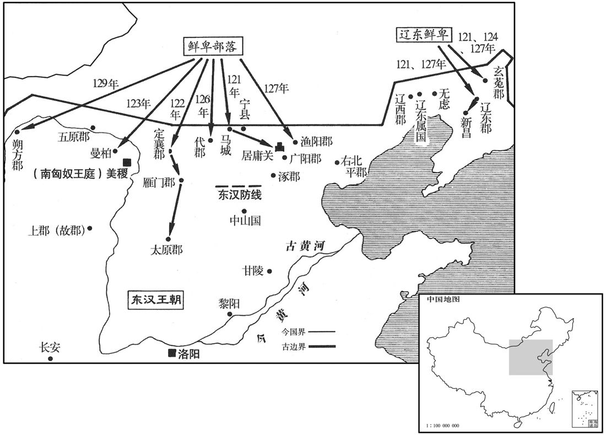

卷次与人物目录 / 卷51
资治通鉴 · 卷第五十一【汉纪四十三】
公元125年至公元133年 · 原文、白话与胡三省注
本页按胡注本编排保存全卷内容。白话采用本站所据译本，未可靠对应的内容另列说明；事件标题用于定位，并非原书文字。
本卷共119段原文，119段有译文对应，0段缺译或待核对。
卷第五十一【汉纪四十三】起旃蒙赤奋若（乙丑），尽昭阳作噩（癸酉），凡九年。
卷首原文与注释
孝安皇帝下
公元125年 · 汉孝安皇帝延光四年
延光四年〔（乙丑、一二五）〕
上传原文的注释括号有异常，字符原样保留；无法可靠划分的段落默认全文显示。
本年事件索引（现代整理）
春，二月，乙亥，下邳惠王衍薨。
春季，二月乙亥（疑误），下邳惠王刘衍去世。
甲辰，车驾南巡。
甲辰（十七日），安帝去南方巡视。
三月，戊午期，日有食之。
两版字句有差异，建议核对原文。
三月戊午朔（初一），出现日食。
庚申，帝至宛，不豫。〔宛，于元翻。书金縢：主有疾，弗豫。孔安国注曰：不悦豫。〕乙丑，帝发自宛；丁卯，至叶，崩于乘舆。〔叶，式涉翻。乘，绳证翻。〕年三十二。
庚申（初三），安帝抵宛，身体顿觉不适。乙丑（初八），从宛出发。丁卯（初十），抵达叶县，就死在车上。年仅三十二岁。
皇后与阎显兄弟、江京、樊丰等谋曰：「今晏驾道次，〔贤曰：晏，晚也。臣下不敢斥言帝崩，犹言晚驾而出。道次，犹言路次也。〕济阴王在内，邂逅公卿立之，还为大害。〔邂，下廨翻。逅，户茂翻。〕乃伪云「帝疾甚」，徙御卧车，所在上食、问起居如故。〔上，时掌翻。〕驱驰行四日，庚午，还宫。〔自叶至雒阳六百余里。〕辛未，遣司徒刘熹诣郊庙、社稷，告天请命；〔武王有疾，周公为三坛同墠，因太王、王季、文王以请命于天；后世踵而行之。〕其夕，〔【章：甲十六行本「夕」下有「乃」字；孔本同。】〕发丧。尊皇后曰皇太后。太后临朝。以显为车骑将军、仪同三司。太后欲久专国政，贪立幼年，与显等定策禁中，迎济北惠王子北乡侯懿为嗣。〔贤曰：惠王，名寿，章帝子也。济，子礼翻。考异曰：东观记、续汉书作「北乡侯犊」，今从袁纪、范书。〕济阴王以废黜，不得上殿亲临梓宫，〔临，力鸩翻。〕悲号不食；〔号，户刀翻。〕内外群僚莫不哀之。
皇后和她的兄弟阎显等，以及宦官江京、樊丰等密谋说：“如今皇帝死在道上，他的亲生儿子济阴王却留在京都洛阳。消息一旦传出，如果公卿大臣集会，拥立济阴王继承帝位，将给我们带来大祸。”于是谎称皇帝病重，将尸首抬上卧车，所过之处，贡献饮食、问候起居，和往常一样。车队急行四天，于庚午（十三日）返抵皇宫。辛未（十四日），派司徒刘熹前往郊庙、社稷，祷告天地。当晚，发丧，尊皇后为皇太后。太后临朝主政，任命其兄阎显为车骑将军、仪同三司。太后为了长期把持朝廷大权，想选立一个年幼的皇帝。于是和阎显等在禁宫中定策，决定迎立济北惠王的儿子、北乡侯刘懿继位。而济阴王因在此前已遭废黜，反而不得上殿在棺木前哀悼父亲，他悲痛号哭，饮食不进。宫廷内外文武百官，无不为之哀伤。
甲戌，济南孝王香薨，无子，国绝。〔香，济南安王康之孙。康，光武子也。〕
甲戌（十七日），济南孝王刘香去世，无子继承，封国撤除。
乙酉，北乡侯即皇帝位。
乙酉（二十八日），北乡侯刘懿即皇帝位。
夏，四月，丁酉，太尉冯石为太傅，司徒刘熹为太尉，参录尚书事；前司空李合为司徒。〔合，古合翻，又曷阁翻。〕
夏季，四月丁酉（十一日），任命太尉冯石为太傅，司徒刘熹为太尉，参与主管尚书事务。前任司空李为司徒。
阎显忌大将军耿宝位尊权重，威行前朝，〔朝，直遥翻。〕乃风有司奏「宝及其党与〔风，读曰讽。〕中常侍樊丰、虎贲中郎将谢恽、侍中周广、野王君王圣、圣女永等更相阿党，互作威福，皆大不道。」辛卯，丰、恽、广皆下狱，死；〔更，工衡翻。下，遐稼翻。〕家属徒比景。贬宝及弟子林虑侯承皆为亭侯，〔牟平侯耿舒子袭，尚显宗女隆虑公主。宝嗣，袭封，而弟子承绍公主封为林虑侯。林虑，即隆虑也，避殇帝讳，改「隆」为「林」。虑，音庐。〕遣就国；宝于道自杀。王圣母、子徙鴈门。于是以阎景为卫尉，耀为城门校尉，晏为执金吾，兄弟并处权要，〔处，昌吕翻。〕威福自由。
阎显顾忌大将军耿宝位尊权重，威望又高，于是指使有关官吏弹劾：“耿宝和他的同党中常侍樊丰、虎贲中郎将谢恽、侍中周广、野王君王圣、王圣的女儿永等人，互相结党营私，作威作福，都大逆不道。”辛卯（初五），樊丰、谢恽、周广都被捕下狱处死，家属流放比景。耿宝和侄儿林虑侯耿承都贬为亭侯，遣归封国。耿宝在途中自杀。王圣母子，流放雁门。于是，阎显又任命其弟阎景为卫尉，阎耀为城门校尉，阎晏为执金吾，兄弟同居权力中枢，任意作威作福。
己酉，葬孝安皇帝于恭陵，〔贤曰：恭陵，在今洛阳东北二十七里。〕庙曰恭宗。
已酉（二十三日），将安帝埋葬在恭陵，庙号恭宗。
九（六）月，乙巳，赦天下。
六月乙巳（二十日），大赦天下。
秋，七月，西域长史班勇发敦煌、张掖、酒泉六千骑及鄯善、疏勒、车师前部兵击后部王军就，大破之，〔敦，徒门翻。鄯，上扇翻。〕获首虏八千余人，生得军就及匈奴持节使者，将至索班没处斩之，传首京师。〔索班事见上卷永宁元。〕
秋季，七月，西域长史班勇征发敦煌、张掖、洒泉等郡六千骑兵和鄯善、疏勒、车师前王国的军队，进击车师后王国国王军就，大捷，斩首八千余人，生擒军就和匈奴持节使者，将其带到索班阵亡处斩首，把人头传送到京都洛阳。
冬，十月，丙午，越巂山崩。〔巂，音髓。〕
冬季，十月丙午（二十二日），越郡发生山崩。
北乡侯病笃，中常侍孙程谓济阴王谒者长兴渠曰：〔贤曰：兴，姓；渠，名。余按百官志，王国谒者比四百石，其下有礼乐长、卫士长、医工长、永巷长，而无谒者长。窃意长兴，姓也。〕「王以嫡统，本无失德；先帝用谗，遂玉废黜。若北乡侯不起，相与共断江京、阎显，事无不成者。」〔断，丁乱翻。〕渠然之。又中黄门南阳王康，先为太子府史，〔太子府史，掌东宫府藏。〕及长乐太官丞京兆王国等〔长乐太官丞，掌太后食膳。乐，音洛。〕并附同于程。〔附同者，既相党附，又与之同谋。〕江京谓阎显曰：「北乡侯病不解，〔解，散也。言病缠于身而不散也。〕国嗣宜以时定，何不早征诸王子，简所置所！」〔简，择也。置，立也。〕显以为然。辛亥，北乡侯薨；显白太后，秘不发丧，更征诸王子，闭宫门，屯兵自守。
北乡侯刘懿病重，中常侍孙程对济阴王谒者长兴渠说：“济阴王是皇帝嫡子，原本没有过失，先帝听信奸臣谗言，竟被废黜。如果北乡侯的病不能痊愈，我与你联合除掉江京、阎显，没有不成功之理。”长兴渠同意。此外，中黄门、南阳郡人王康，先前曾担任太子府史，以及长乐太官丞、京兆王国等人，也都赞成孙程的意见。江京对阎显说：“北乡侯的病不愈，继位人应该按时确定，何不及早征召诸王之子，从中选择可以继位的人？”阎显认为有理。辛亥（二十七日），北乡侯去世。阎显急忙禀告太后，暂时秘不发丧，再征召诸王之子进宫，关闭宫门，驻兵把守。
十一月，乙卯，孙程、王康、王国与中黄门黄龙、彭恺、孟叔、李建、王成、张贤、史泛、马国、王道、李元、杨佗、陈予、赵封、李刚、魏猛、苗光等聚谋于西锺下，皆截单衣为誓。丁巳，京师及郡国十六地震。是夜，程等共会崇德殿上，〔崇德殿在南宫。水经注：魏文帝于汉崇德殿故处起太极殿，盖南宫正殿也。〕因入章台门。时江京、刘安及李闰、陈达等俱坐省门下，〔省门，即禁门也。前书谓禁中为省中。〕程与王康共就斩京、安、达。以李闰权势积为省内所服，欲引为主，因举刃胁闰曰：「今当立济阴王，毋得摇动！」闰曰：「诺。」于是扶闰起，俱于西锺下迎济阴王即皇帝位，时年十一。召尚书令、仆射以下从辇幸南宫，程等留守省门，遮扞内外。帝登云台，召公卿、百僚，使虎贲、羽林士屯南、北宫诸门。
十一月乙卯（初二），孙程、王康、王国和中黄门黄龙、彭恺、孟叔、李建、王成、张贤、史泛、马国、王道、李元、杨佗、陈予、赵封、李刚、魏猛、苗光等，在西钟楼下秘密聚会，每人撕下一幅衣襟进行盟誓。丁巳（初四），京都洛阳和十六个郡和封国发生地震。当晚，孙程等先在崇德殿上集合，然后进入章台门。当时，江京、刘安和李闰、陈达等正好都坐在禁门下，孙程和和王康一齐动手，斩杀江京、刘安和陈达。因李闰长久享有权势，为宫内人所信服，想让他来领头。所以举刀胁迫李闰说：“你必须答应拥戴济阴王为帝，不得动摇！”李闰回答：“是。”于是，大家将李闰扶起来，都到西钟楼下迎济阴王即皇帝位，当时济阴王十一岁。接着召集尚书令、仆射以下官吏跟随御车，进入南宫。孙程等留守禁门，断绝内外交通。皇帝登上云台，召集公卿百官。派遣虎贲和羽林卫士分别驻守南宫和北宫的所有宫门。
阎显时在禁中，忧迫不知所为，〔显盖在北宫。〕小黄门樊登劝显以太后诏召越骑校尉冯诗、虎贲中郎将阎崇兵屯平朔门以御程等。〔考异曰：宦者传作「朔平门」。今从袁纪。余按百官志，朔平门，北宫北门也；恐当以宦者传为是。〕显诱诗入省，谓曰：「济阴王立，非皇太后意，玺绶在此。〔诱，音酉。玺，斯氏翻。绶，音受。此谓天子玺绶也。〕苟尽力效功，封侯可得。」太后使授之印曰：「能得济阴王者，封万户侯；得李闰者，五千户侯。」诗等皆许诺，辞以「卒被召，所将众少。」〔卒，读曰猝。〕显使与发迎吏士于左掖门外，诗因格杀登，归营屯守。
阎显这时正在宫中，闻讯后惊惶失措，不知如何应变。小黄门樊登劝阎显用太后诏命征召越骑校尉冯诗、虎贲中郎将阎崇，率军驻守平朔门，以抵御孙程等人。于是，阎显用征召的办法引诱冯诗入宫，并对他说：“济阴王即位，不是皇太后的旨意，皇帝玺印还在这里。如果你能尽力效劳，可以得到封侯。”太后派人送来印信说：“能拿获济阴王的，封万户侯。拿获李闰的，封五千户侯。”冯诗等人虽都承诺，但报告说：“因仓猝被召，带兵太少。”阎显派冯诗等和樊登去左掖门外迎接增援的将士，冯诗等趁机斩杀樊登，归营固守。
显弟卫尉景遽从省中还外府，〔外府，卫尉府也。〕收兵至盛德门。孙程传召诸尚书使收景。〔传召，传诏召之也。〕尚书郭镇时卧病，闻之，即率直宿羽林出南止车门，逢景从吏士拔白刃呼曰：「无干兵！」镇即下车持节诏之，景曰：「何等诏！」因斫镇，不中。〔呼，火故翻。中，竹仲翻。〕镇引剑击景堕车，左右以戟叉其胸，遂禽之，送廷尉狱，即夜死。
阎显的弟弟卫尉阎景仓猝从宫中返回外府，收兵抵达盛德门。孙程传诏书命令尚书们逮捕阎景。当时，尚书郭镇正卧病在床，一听到命令，立即率领值班的羽林卫士，从南止车门出来，正遇上阎景的部属拔刀大叫：“不要挡道！”郭镇立即下车持节宣读诏书，阎景说：“什么诏书！”于是举刀砍郭镇，没有砍中。郭镇拔剑将阎景击落车下，羽林卫士用戟叉住他的胸脯，将其活捉，送至廷尉狱囚禁，当夜死去。
戊午，遣使者入省，夺得玺绶，帝乃幸嘉德殿，〔按帝纪，嘉德殿在南宫。〕遣侍御史持简收阎显及其弟城门校尉耀、执金吾晏，并下狱，诛；〔下，遐稼翻。〕家属皆徙比景。迁太后于离宫。己未，开门，罢屯兵。壬戌，诏司隶校尉：「惟阎显、江京近亲，当伏辜诛，其余务崇宽贷。」封孙程等皆为列侯：程食邑为户，王康、王国食九千户，黄龙食五千户，彭恺、孟叔、李建食四千二百户，王成、张贤、史泛、马国、王道、李元、杨佗、陈予、赵封、李刚食四千户，魏猛食二千户，苗光食千户：是为十九侯，〔孙程为浮阳侯，王康为华容侯，王国为郦侯，黄龙为湘南侯，彭恺为西平昌侯，孟宿为中庐侯，李建为复阳侯，王成为广宗侯，张贤为祝阿侯，史泛为临沮侯，马国为广平侯，王道为范县侯，李元为褒信侯，杨佗为山都侯，陈予为巂侯，赵封为析县侯，李刚为枝江侯，魏猛为夷陵侯，苗光为东阿侯。〕加赐车马、金银、钱帛各有差；李闰以先不豫谋，故不封。握孙程为骑都尉。初，程等入章台门，苗光独不入。诏书录功臣，令王康疏名，康诈疏光入章台门。光未受符策，〔汉初封王侯皆剖符；至武帝封齐燕、广陵三王，始作策。〕心不自安，诣黄门令自告。〔黄门令，主省中诸宦者，故诣之自告。〕有司奏康、光欺诈主上；诏书勿问。以将作大匠来历为卫尉。祋讽、〔【章：甲十六行本「讽」下有「刘玮」二字；乙十一行本同；孔本同；张校同；退斋校同。】〕闾丘弘等先卒，皆拜其子为郎。朱伥、施延、陈光、赵代皆见拔用，后至公卿。〔以来历等鸿都门之谏也，事见上卷上年。祋，丁外翻，又丁活翻。伥，丑羊翻。〕征王男、邴吉家属还京师，厚加赏赐。〔男、吉家徙事见上卷上年。〕帝之见废也，监太子家小黄门籍建、傅高梵、〔监，古衔翻。贤曰：梵，音扶泛翻。余按来历传：傅，中傅也。梵，又房戎翻。〕长秋长赵熹、丞良贺、〔良，姓也。左传：郑良霄，穆公子子良之孙。〕药长夏珍皆坐徒朔方；〔长秋长，盖即大长秋；丞一人，六百石；中宫药长，四百石：皆皇后宫官。〕帝即位，并擢为中常侍。
戊午（初五），派使者入北宫，夺到皇帝玺印。于是，皇帝亲临嘉德殿，派遣侍御史持符节，将阎显及其弟城门校尉阎耀、执金吾阎晏一并逮捕，下狱处死，家属全都流放比景。将太后迁往离宫。己未（初六），打开宫门，撤走驻兵。壬戊（初九），下诏给司隶校尉：“只有阎显、江京近亲应当被诛杀，其他的人，均须从宽处理。”孙程等都被封为列侯：孙程食邑万户，王康、王国食邑九千户，黄龙食邑五千户，彭恺、孟叔、李建各食邑四千二百户，王成、张贤、史泛、马国、王道、李元、杨佗、陈予、赵封、李刚，各食邑四千户，魏猛食邑二千户，苗光食邑千户，号为十九侯。同时，分别等级，赏赐车马、金银和钱帛。李闰因没有参与首谋，所以没有封侯。擢升孙程为骑都尉。起初，孙程等进入章台门，唯独苗光没有进去。诏书命王康呈报功臣名单时，王康谎报苗光进入章台门。苗光未得到封赏的符策，内心惶恐不安，便向黄门令自首。于是，有关官吏弹劾王康和苗光欺蒙皇上。皇帝下诏不必追究。任命将作大匠来历为卫尉。因讽、闾丘弘等前已病故，将他俩的儿子都任命为郎。朱伥、施延、陈光和赵代，也都得到提拔任用，后来官至公卿。征召王男、邴吉家属，返回京都洛阳，给予厚赏。先前皇帝被废黜时，监太子家小黄门籍建、傅高梵、长秋长赵熹、丞良贺、药长夏珍都坐罪，被流放到朔方郡。皇帝即位后，全都擢升为中常侍。
初，阎显辟崔骃之子瑗为吏，〔骃，音因。〕瑗以北乡侯立不以正，知显将败，欲说令废立，而显日沈醉，〔说，输芮翻；下同。沈，持林翻。〕不能得见，乃谓长史陈禅曰：「中常侍江京等惑蛊先帝，废黜正统，扶立疏孽。〕孔颖达曰：孽者，孽也，树木斩而复生谓之孽。以嫡子比根干，庶子比枝孽，故孽子，枝庶也。中候曰：无易树子。注云：树子，适子。玉藻云：公子曰臣孽。注：孽，当为绦。文王曰：本支百世。是适子比树本，庶子比枝孽也。〕少帝即位，发病庙中，周之勃之征，于斯复见。〔贤曰：吕后立惠帝后宫子为少帝，周勃废之也。〕今欲与君共求见说将军，〔说，式芮翻。〕白太后，收京等，废少市，引立济阴王，必上当天心，下合人望，伊、霍之功不下席而立，则将军兄弟传祚于无穷；若拒违天意，久旷神器，则将以无罪并辜元恶；〔元恶，大恶也。并辜，谓与之同获罪也。〕此所谓祸福之会，分功之时也。」〔史记：蔡泽说范睢曰：「君独不见夫博者乎！或欲大投，或欲分功。今君相秦，坐制诸侯，使天下皆畏，秦，此亦秦之分功之时也。」禅犹豫未敢从。会显败，瑗坐被斥；〔被，皮义翻。〕门生苏祗上书言状，瑗遽止之。时陈禅为司隶校尉，召瑗谓曰：「弟听祗上书，〔贤曰：弟，但也。司马相如传曰：弟俱如临邛。弟，读如第。〕禅请为之证。」瑗曰：「此譬犹儿妾屏语耳，〔屏，必郢翻。于隐屏之处相与私语也。〕愿使君勿复出口！」〔禅时为司隶校尉，故称之曰使君。司隶校尉部察三辅、三河、弘农，其职犹十三部使者。鲍永为司隶校尉，光武曰：「奉使如此，何如﹖」复，扶又翻；下同。〕遂辞归，不复应州郡命。
两版字句有差异，建议核对原文。
起初，阎显征聘崔的儿子崔瑗为下属官员，崔瑗因北乡侯非先帝嫡子而继位为帝，预见阎显肯定要失败，打算说服阎显，废黜北乡侯，改立济阴王为帝。可是阎显日日沉醉，见不到面，他于是对长史陈禅说：“中常侍江京等迷惑先帝，废除皇家正统，另立旁支。北乡侯即位后，就在宫中发病。周勃废黜吕后所立惠帝后宫子为少帝的迹象，今又重复出现。我打算和你一同面见将军阎显，说服他禀告太后，逮捕江京等人，废黜少帝，拥立济阴王为帝，定然上得天心，下合人望。这样，伊尹、霍光的功劳，我们不必离开座位，便可建立；而将军兄弟的封爵也可世代相传。如果抗拒天意，使帝位久缺，我们虽无罪，却要和首恶同罪，这正是福祸交关的关键时机，分取胜利果实的时刻。”陈禅犹豫，未敢听从。正逢阎显破败，崔瑗坐罪免官，崔瑗的门生苏祗，准备上书呈报上述往事，崔瑗急忙加以制止。当时，陈禅正担任司隶校尉，召见崔瑗说：“你尽管让苏祗上书，我愿出面为你作证。”崔瑗说：“这就如同小孩、妇女私下谈话一样，愿您不要再提此事！”于是告辞归乡，不再接受州郡的征聘。
己卯，以诸王礼葬北乡侯。
已卯（二十六日），用诸侯王礼仪埋葬北乡侯。
司空刘授以阿附恶逆，辟召非其人，策免。〔辟召非人事见上卷延光二年。〕十二月，甲申，以少府河南陶为司空。
司空刘授因阿附叛逆，所征聘的官吏也不是适当人选，被免官。十二月甲申（初一），擢升少府、河南郡人陶敦为司空。
杨震门生虞放、陈翼诣阙追讼震事；〔事见上卷上年。〕诏除震二子为郎，赠钱百万，以礼改葬于华阳潼亭，〔贤曰：墓在今潼关西大道之北，其碑尚存。华，户化翻。〕远近毕至。有大鸟高丈余集震丧前；〔高，居号翻。〕郡以状上。〔上，时掌翻。〕帝感震忠，〔【章：甲十六行本「忠」下有「直」字；乙十一行本同；孔本同；张校同。】〕诏复以中牢具祠之。〔中牢，即少牢，羊、豕具也。复，扶又翻；下同。〕
杨震的门生虞放、陈翼，到宫阙为杨震鸣冤。皇帝下诏，任命杨震的两个儿子为郎，赠钱一百万，用三公的礼仪将杨震改葬在华阴潼亭。远近之人全都赶来吊丧。当时有一只一丈余高的大鸟降落在灵堂之前，郡太守府将此情景呈报朝廷，皇帝为杨震的忠心所感，下诏再用中牢即一羊、一猪进行祭祀。
议郎陈禅以为：「阎太后与帝无母子恩，宜徙别馆，绝朝见，」〔朝，直遥翻。见，贤遍翻。〕群臣议者咸以为宜。司徒掾汝南周举谓李合曰：「昔瞽瞍常欲杀舜，舜事之逾谨；〔瞽瞍使舜涂廪，而自下焚廪；使浚井，既入，从而揜之。其欲杀者屡矣，而舜事瞽瞍弥谨。书曰：祗载见瞽瞍，夔夔斋栗。掾，俞绢翻。合，曷阁翻，又古合翻。〕郑武姜谋杀庄公，庄公誓之黄泉，秦始皇怨母失行，〔行，下孟翻。〕久而隔绝，后感颍考叔、茅蕉〔【章：甲十六行本「蕉」作「焦」；乙十一行本同。】〕之言，复修子道，书传美之。〔郑武姜爱少子共叔段，谋袭庄公，公寘姜氏于城颍而誓之曰：「不及黄泉，无相见也！」颍考叔以舍肉遗母感之，遂为母子如初。秦始皇事见六卷九年。〕今诸阎新诛，太后幽在离宫，若悲愁生疾，一旦不虞，主上将何以令于天下！如从禅议，后世归咎明公。宜密表朝廷，令奉太后，率群臣朝觐如旧，以厌天心，以答人望！」〔厌，如字，满也。〕合即上疏陈之。
议郎陈禅认为：“阎太后与皇帝既无母子恩情，应该将太后迁到另外的馆舍，不再朝见。”议论此事的群臣全都赞同。但司徒掾、汝南郡人周举却对李说：“从前，瞽瞍多次想要谋杀儿子虞舜，而舜对父亲更为孝顺。郑庄公的母亲武姜谋杀庄公，庄公发誓：不到黄泉之下，不再相见。秦始皇怨恨母亲淫乱失行，久不见面。后来他们分别被颍考叔，茅蕉的劝谏所感动，重修孝道。史书上对这些事，都十分称道。现在，阎显兄弟刚刚伏诛，太后被幽禁在离宫，如果悲愁生病，一旦发生意外，皇上将何以号令天下！如果采纳陈禅的意见，后世将把罪过归到您的身上。应该密奏朝廷，请求皇帝供养太后，跟过去一样率领文武百官朝见，以顺天心，以回答人们的愿望！”李立即向皇帝上书陈辞。
原书衔接
孝顺皇帝上〔讳保，安帝之子也。谥法：慈和服曰顺。伏侯古今注曰：「保」之字曰「守」。〕
公元126年 · 汉孝顺皇帝永建元年
永建元年〔（丙寅、一二六）〕
本年事件索引（现代整理）
春，正月，帝朝太后于东宫，太后意乃安。
春季，正月，汉顺帝前往东宫朝见阎太后，太后的心情才安定下来。
甲寅，赦天下。
甲寅（初二），大赦天下。
辛未，皇太后阎氏崩。
辛未（十九日），阎太后去世。
辛巳，太傅冯石、太尉刘熹以阿党权贵免。司徒李合罢。
辛巳（二十九日），太傅冯石和太尉刘熹因巴结权贵被免职。同日，司徒李也被罢官。
二月，甲申，葬安思皇后。〔贤曰：谥法：谋虑不愆曰思。〕
二月甲申（初二），埋葬安思皇后。安思皇后，即阎太后。
丙戌，以太常桓焉为太傅；大鸿胪朱〔【章：甲十六行本「朱」上有「京兆」二字；乙十一行本同；孔本同；张校同；退斋校同。】〕宠为太尉，参录尚书事；长乐少府朱伥为司徒。〔胪，陵如翻。乐，音洛。伥，丑羊翻。〕
丙戌（初四），擢升太常桓焉为太傅；大鸿胪朱宠为太尉，参与主管尚书事务；长乐少府朱伥为司徒。
封尚书郭镇为定颍侯。〔以禽阎景功也。定颍侯国，属汝南郡。〕
封尚书郭镇为定颍侯。
陇西锺羌反，校尉马贤击之，战于临洮，斩首千余级，羌众皆降；由是凉州复安。〔洮，土刀翻。降，户江翻。复，扶又翻。〕
陇西钟羌反叛，校尉马贤率军进击。在临洮会战，斩杀钟羌一千余人，钟羌部众全都归降。从此以后，凉州重新得到安定。
六月，己亥，封济南简王错子显为济南王。〔安帝延光四年，济南国绝，今绍封。谥法：一德不懈曰简；又臣谥：恭敬行善曰简。〕
六月己亥（十九日），封济南简王刘错的儿子刘显为济南王。
秋，七月，庚午，以卫尉来正为车骑将军。
秋季，七月庚午（二十一日），任命卫尉来历为车骑将军。
八月，鲜卑寇代郡，太守李超战殁。
八月，鲜卑攻打代郡，太守李超阵亡。

司隶校尉虞诩到官数月，奏冯石、刘熹，免之，又劾奏中常侍程璜、陈秉、孟生、李闰等，〔劾，户概翻，又户得翻。〕百官侧目，号为苛刻。三公劾奏：「诩盛夏多拘系无辜，为吏民患。」〔三公欲致诩罪，言盛夏当顺天地长物之性，不当违法拘系无辜。劾，户概翻，又户得翻。〕诩上书自讼〔考异曰：诩传云：「帝省其章，乃为免司空陶敦。」按袁绝，孙程就国在九月，而敦免在十月，盖帝由此知敦不直，因事免之。不然，何三府共奏而独免敦也！〕曰：「法禁者，俗之堤防；刑罚者，民之衔辔。今州任郡，郡曰任县，更相委远，〔更，工衡翻。远，于愿翻。〕百姓怨穷；以苟容为贤，尽节为愚。臣所发举，臧罪非一。〔臧，古赃字通。〕三府恐为臣所奏，遂加诬罪。臣将从史鱼死，即以尸谏耳！」〔韩诗外传曰：卫大夫史鱼病且死，谓其子曰：「我数言蘧伯玉之贤而不能进，弥子瑕不肖而不能退；为人臣生不能进贤，退不肖，死不当治丧正堂，殡我于室足矣。」君问其故。子以父言闻。君乃立召蘧伯玉而贵之，斥弥子瑕而退之，徙殡于正堂，成礼而后去。〕帝省其章，乃不罪诩。〔省，悉景翻。〕
司隶校尉虞诩到任数月，上奏弹劾太傅冯石和太尉刘熹，使他们被免官，又上奏弹劾中常侍程璜、陈秉、孟生、李闰等。百官都感到不满，指责他苛刻。于是，三公上奏弹劾：“虞诩违反常法，于盛夏之季，大肆逮捕和关押无罪的人，吏民深受其害。”虞诩也向顺帝上书，为自己申辩说：“ 法令是整齐风俗的堤防，刑罚是驾驭百姓的衔铁和缰绳。然而，现在的官府，州一级委任给郡，郡一级委任给县，层层往下推卸责任，百姓怨恨，投诉无门。并且，当今的风气，都以苟且容身为贤能，尽忠职守为愚蠢。我所查获的贪赃枉法案件，各种各样，盘根错节。三公因恐被我举报，于是先来诬陷我。我将追随史鱼去死，向皇上尸谏！”顺帝看了虞诩的奏章，于是不对虞诩降罪。
中常侍张防卖弄权势，请托受取；诩案之，屡寝不报。诩不胜其愤，〔胜，音升。〕乃自系廷尉，奏言：「昔孝安皇帝任用樊丰，交乱嫡统，几亡社稷。〔事见上卷安帝延光三年。几，居希翻。〕今者张防复弄威柄，〔复，扶又翻；下同。〕国家之祸将重至矣。〔重，直用翻。〕臣不忍与防同朝，谨自系以闻，无令臣袭杨震之迹！」〔杨震事见上卷延光三年。〕书奏，防流涕诉帝，诩坐论输左校；〔将作大匠有左校令，掌左工徒。输左校者，免官为徒，输作左校也。校，户教翻。〕防必欲害之，二日之中，传考四狱。狱吏劝诩自引，〔自引，谓引分自裁也。传，株恋翻。〕诩曰：「宁伏欧刀以示远近！〔谓宁受刑而死于市也。〕暗呜自杀，〔类篇曰：啼泣无声谓之喑，叹伤谓之呜。〕是非孰辨邪！」浮阳侯孙程、祝阿侯张贤相率乞见，〔浮阳侯国，属勃海郡。见，贤遍翻。〕程曰：「陛下始与臣等造事之时，〔贤曰：谓帝被废，程等谋立之时也。〕常疾奸臣，知其倾国。今者即位而复自为，何以非先帝乎！司隶校尉虞诩为陛下尽忠，〔为，于伪翻。〕而更被拘系；常侍张防臧罪明正，反构忠良。今客星守羽林，〔史记天官书：虚、危南有众星曰羽林。晋书天文志：羽林四十五星，在营室南。〕其占宫中有奸臣；宜急收防送狱，以塞天变。」〔塞，悉则翻。〕时防立在帝后，程叱防曰：「奸臣张防，何不下殿！」防不得已，趋就东箱。〔贤曰：埤苍云：箱，序也，字或作「厢」。〕程曰：「陛下急收防，无令从阿母求请！」〔贤曰：阿母，宋娥也。〕帝问诸尚书，尚书贾朗素与防善，证诩之罪；帝疑焉，谓程曰：「且出，吾方思之！」于是诩子顗〔顗，鱼岂翻。〕与门生百余人，举幡候中常侍高梵车，叩头流血，诉言枉状。梵入言之，〔梵，房戎翻，又房泛翻。〕防坐徙边，贾朗等六人或死或黜；即日赦出诩。程复上书陈诩有大功，语甚切激。〔复，扶又翻。〕帝感悟，复征拜议郎；数日，迁尚书仆射。
因中常侍张防利用权势，接受贿赂和请托，虞诩曾多次请求将他法办，都被搁置，没有回音。虞诩不胜愤慨，于是自投廷尉监狱，上书顺帝说：“过去，安帝任用樊丰，废黜皇室正统，几乎使社稷灭亡。现在，张防又玩弄权势，亡国之祸，将再降临。我不忍心和张防同列朝廷，谨自囚廷尉狱以报，免得让我重蹈杨震的覆辙！”奏章呈上后，张防在顺帝面前流泪哭诉，于是，虞诩坐罪，被遣送到左校罚作苦役。而张防仍然不肯放过虞诩，必欲置之死地。两天之内，虞诩被传讯拷打四次。狱吏劝虞诩自杀，虞诩回答说：“我宁愿伏刑刀死于市，让远近的人都知道！如果不声不响地自杀，谁能分辨是非呢？”浮阳侯孙程和祝阿侯张贤相继请求面见顺帝，孙程说：“陛下当初和我们起事的时候，常痛恨奸臣，深知他们会使国家倾覆。而今即位以后，却又自己纵容和包庇奸佞，又怎么能责备先帝不对？司隶校尉虞诩为陛下尽忠，却被逮捕囚禁。中常侍防贪赃枉法，证据确凿，反而陷害忠良。今观天象，客星守羽林，是宫中有奸臣的征兆。应该急捕张防下狱，以堵塞上天所降的灾异。”当时，张防站在顺帝背后，孙程大声呵斥张防说：“奸臣张防，为何不下殿去！”张防迫不得已，小步疾走退入东厢。孙程又对顺帝说：“陛下，请立即下令逮捕张防，不要让他去向您的奶母求情！”顺帝征求尚书们的意见，尚书贾朗跟张防素来交情很好，争辩说虞诩有罪。顺帝疑惑，对孙程说：“你们先出去，朕正在考虑！”于是，虞诩的儿子虞和门生一百余人，举着旗帜，等候中常侍高梵的车子，向高梵叩头流血，申诉虞诩被冤枉的情况。高梵入宫后将报告给顺帝。结果，张防因罪被流放到边疆，尚书贾朗等六人，有的处死，有的免官，并于当天释放虞诩。孙程又上书陈述虞诩有大功，措辞甚为直率激烈。顺帝感动醒悟，又任命虞诩为议郎。几天后，擢升为尚书仆射。
诩上疏荐议郎南阳左雄曰：「臣见方今公卿以下，类多拱默，〔拱默，言拱手而默无一言。〕以树恩为贤，尽节为愚，至相戒曰：『白璧不可为，容容多后福。』〔贤曰：容容，犹和同也。言不可为白璧之清洁，常与众人和同也。〕伏见议郎左雄，有王臣蹇蹇之节，〔易曰：王臣蹇蹇，匪躬之故。〕宜擢在喉舌之官，〔东都谓尚书为喉舌之官，以其出纳王命也。〕必有匡弼之益。」由是拜雄尚书。
虞诩上书顺帝，保荐议郎、南阳郡人左雄说：“我看到，当今公卿以下的官吏，大多属于专会拱手作揖而不敢说话的好好先生，把到处讨好广结善缘的人，视为贤能，而把为国尽忠尽职的人，视作愚蠢，甚至还互相告诫说：‘不可做白璧，和气多后福。’我认为议郎左雄，具有作为朝廷大臣必须具备的忠直气节，应该提拔为出纳王命的喉舌之官，一定会对扶正和辅佐朝廷，有所裨益。”因此，顺帝任命左雄为尚书。
浮阳侯孙程等怀表上殿争功，帝怒；有司劾奏「程等干乱悖逆，〔劾，户概翻，又户得翻。悖，蒲没翻，又蒲内翻。〕王国等皆与程党，久留京都，益其骄恣。」帝乃免程等官，悉徙封远县；因遣十九侯就国，敕雒阳令促期发遣。
浮阳侯孙程等人因带着奏章，上殿争功，顺帝勃然大怒。于是，有关官吏弹劾：“孙程等人干乱朝政，抗命叛逆。王国等人和孙程结党，长期逗留京都洛阳，更使他们骄纵放肆。”因此，顺帝将孙程等人免官，全都改封到偏远地区，又下令十九侯各自前往他们的封国，命洛阳令督促他们，限期动身。
司徒掾周举说朱伥曰：「朝廷在西锺下时，非孙程岂立！〔东都谓天子为国家，又谓为朝廷。说，输芮翻。伥，丑羊翻。〕今忘其大德，录其小过；如道路夭折，〔夭，于绍翻。〕帝有杀功臣之讥。及今未去，宜急表之！」伥曰：「今诏指方怒，吾独表此，必致罪谴。」举曰：「明公年过八十，位为台辅，不于今时竭忠报国，借身安宠，欲以何求！禄位虽全，必陷佞邪之议；谏而获罪，犹有忠贞之名。若举言不足采，请从此辞！」伥乃表谏，帝果从之。
司徒掾周举劝说司徒朱伥：“当初，皇帝在西钟楼下时，如果不是孙程等人尽力，怎能即位为帝？现在却忘记人家的大德，计较他们的微小过失。如果他们在回封国的途中有人死亡，则皇帝就会遭受屠杀功臣的非议。趁着孙程等人尚未动身，应该迅速奏明皇上，加以劝阻。”朱伥回答说：“现皇上正在发怒，如果我单独为此事上奏，一定会受到皇帝的降罪谴责。”周举又说：“您年龄已经超过八十岁，位居宰相高位，不在此时尽忠报国，而珍惜自己，安于尊宠，您想得到什么？尽管能保全自己的俸禄和官位，但定会被人谴责为奸佞之辈；而因谏诤而获罪，还能留下忠贞的美名。如果我的意见不值得采纳，我请求从此告别！”于是朱伥上表劝谏，顺帝果然采纳。
程徒封宜城侯；〔宜城县，属南郡，春秋之罗国也。考异曰：袁纪：「秋，七月，有司奏：『浮阳侯孙程、祝阿侯张贤为司隶校尉虞诩诃叱左右，谤乩大臣，妄造不祥，干乱悖逆；王国等皆与程党，久留京师，益其骄溢。』诏免程等，徙为都梁侯。程怨恨，封还印绶；更封为宜城侯。」范书孙程传，亦云「坐讼虞诩，呵叱左右，就国。」按虞诩传，「程言见用，上不以为怒。」周举传云，「程坐争功就国」，今从之。〕到国，怨恨恚怼，〔恚，于避翻。怼，直类翻。〕封还印绶、符策，亡归京师，往来山中。诏书追求，复故爵土，赐车马、衣物，遣还国。
孙程被改封为宜城侯。他到封国以后，怨恨不满，将印信和符策都退还朝廷，擅自逃归京都洛阳，往来于山中。顺帝下诏搜寻孙程，找到以后，恢复他原来的封爵和食邑，赏赐车马和衣物，遣送他回到封国。
冬，十月，丁亥，司空陶敦免。
冬季，十月丁亥（初九），将司空陶敦免官。
朔方以西，障塞多坏，鲜卑因此数侵南匈奴；〔数，所角翻。〕单于忧恐，上书乞修复障塞。庚寅，诏：「黎阳营兵出屯中山北界；〔贤曰：黎阳先置营兵；以南单于求复障塞，恐入侵扰乱，置屯兵于中山北界。旧中山郡，今之定州是也。余谓移黎阳营屯中山北界，不过为南部声援耳。〕令缘边郡增置步兵，列屯塞下，教习战射。」
朔方郡以西，障塞多已损坏，鲜卑因此不断侵犯南匈奴，单于忧愁恐惧，上书朝廷，请求修复障塞。庚寅（十二日），顺帝下诏：“征调黎阳营兵到中山北界驻防。令沿边各郡增设步兵，分布驻扎在各边塞，进行军事训练。”
以廷尉张皓为司空。
擢升廷尉张皓为司空。
班勇更立车师后部故王子加特奴为王。〔更，工衡翻；下同。〕勇又使别校诛斩东且弥王，〔校，户教翻。且，子余翻。范书：东且弥国，去洛阳九千二百里。〕亦更立其种人为王；〔种，章勇翻。〕于是车师六国悉平。〔西域传：卑陆、蒲类、东且弥、移支、车师前、后王，是为六国。〕
班勇改立车师后王国前任国王的儿子加特奴为王。又派遣部将斩杀东且弥王，并另立其本族人为王。于是，车师等西域六国，全都归附汉朝。
勇遂发诸国兵击匈奴，呼衍王亡走，其众二万余人皆降。生得单于从兄，勇使加特奴手斩之，以结车师、匈奴之隙。北单于自将万余骑入后部，至金且谷；〔且，子余翻。〕勇使假司马曹俊救之，单于引去，俊追斩其贵人骨都侯。于是呼衍王遂徙居枯梧河上，是后车师无复虏迹。
班勇于是征发西域各国的军队，进击匈奴，呼衍王逃走，其部众二万余人全都投降。单于的堂兄被活捉，班勇让加特奴亲手将他斩杀，以此结下车师和匈奴之间的仇恨。于是，北单于亲自率领一万余骑兵攻打车师后王国，抵金且谷。班勇派遣假司马曹俊前去救援，单于率军后撤，曹俊追击，并斩杀其贵人骨都侯。于是，呼衍王迁到枯梧河畔居住，车师此后不再有匈奴的足迹。
公元127年 · 汉孝顺皇帝永建二年
二年〔（丁卯、一二七）〕
本年事件索引（现代整理）
春，正月，中郎将张国以南单于兵击鲜卑其至鞬，破之。〔鞬，居言翻。〕
春季，正月，中郎将张国率领南单于军队进击鲜卑首领其至，将其击破。
二月，辽东鲜卑寇辽东玄菟；〔菟，同都翻。〕乌桓校尉耿晔发缘边诸郡兵及乌桓出塞击之，斩获甚众；鲜卑三万人诣辽东降。〔降，户江翻；下同。〕
二月，辽东鲜卑攻打辽东玄菟，乌桓校尉耿晔征发沿边各郡郡兵和乌桓的军队出塞讨伐，斩杀和俘虏甚多，鲜卑三万人到辽东郡投降。
三月，旱。
三月，发生旱灾。
初，帝母李氏瘗在雒阳北，〔李氏死见上卷安帝元初二年。瘗，于计翻。〕帝初不知；至是，左右白之，帝乃发哀，亲到瘗所，更以礼殡。〔殡用皇后礼。瘗，于计翻。〕六月，乙酉，追谥为恭愍皇后，葬于恭陵之北。
当初，顺帝的母亲李氏埋葬在洛阳城北，顺帝先前不知道。直到现在，顺帝身边的人才将此事禀报。于是，顺帝为母亲发丧举哀，亲自到埋葬的地方，改以皇后的礼仪殡殓。六月乙酉（十一日），追谥为恭愍皇后，埋葬在恭陵的北面。
西域郭诸国皆服于汉，唯焉耆王元孟未降，〔元孟，和帝永元六年班超所立也。〕班勇奏请攻之。于是遣敦煌太守张朗将河西四郡兵三千人配勇，〔敦，徒门翻。〕因发诸国兵四万余人分为两道击之，勇从南道，朗从北道，约期俱至焉耆。而朗先有罪，欲徼功自赎，〔徼，一遥翻。〕遂先期至爵离关，〔释氏西域记：龟兹国北四十里山上有寺，名雀离大清净。先，悉荐翻。〕遣司马将兵前战，获首虏二千余人，元孟惧诛，逆遣使乞降。张朗径入焉耆，受降而还。朗得免诛，勇以后期征，下狱，免。〔夏之政典曰：先时者杀无赦，不及时者杀无赦。张朗先期以徼功，法所必诛，则班勇非后期也。汉之用刑，不审厥衷，勇免之后，西域事去矣。下，遐稼翻。〕
西域所有的城邦国家都已归服汉朝，只有焉耆王元孟未投降。班勇上奏朝廷，请求出兵讨伐。于是，朝廷派敦煌太守张朗率河西四郡之兵三千人，配合班勇。班勇便征发西域各国之兵，共四万余人，分两路进击焉耆。班勇从南道，张朗从北道，约定日期，到焉耆城下会师。而张朗因先前有罪，急于求功，为自己赎罪，就赶在约定日期之前，抵达爵离关，并派遣司马率军提前进攻，斩首二千余人，元孟害怕被杀，于是派使者请求投降。张朗便直接进入焉耆城，受降而回。结果，张朗得以免除诛杀，而班勇因迟到而被征回京都洛阳，下狱，免官。
秋，七月，甲戌朔，日有食之。
秋季，七月甲戌朔（初一），出现日食。
壬午，太尉朱宠、司徒朱伥免。庚子，以太常刘光为太尉、录尚书事，光禄勋汝南许敬为司徒。光，矩之弟也。敬仕于和、安之间，当窦、邓、阎氏之盛，无所屈桡；〔桡，奴教翻。〕三家既败，士大夫多染污者，〔污，乌故翻。〕独无谤言及于敬，当世以此贵之。
壬午（初九），太尉朱宠和司徒朱伥，都被免官。庚子（二十七日），擢升太常刘光为主尉，主管尚书事务，将光禄勋、汝南郡人许敬任命为司徒。刘光是刘矩的弟弟。许敬曾在和帝与安帝时期作官，当窦、邓、阎氏权势鼎盛之时，他也无所畏缩和屈服。待三家垮台后，许多居官在位的人，都沾有污点，唯独许敬没有遭到非议。因此，当时人都很敬佩他。
初，南阳樊英，少有学行，〔少，诗照翻。行，下孟翻。〕名著海内，隐于壶山之阳，〔贤曰：壶山，在今邓州新城县北，即张衡南都赋所云「天封、大狐」是也。〕州郡前后礼请，不应；公卿举贤良、方正、有道，皆不行；安帝赐策书征之，不赴。是岁，帝复以策书、玄纁，备礼征英，〔复，扶又翻。〕英固辞疾笃。诏切责郡县，驾载上道。英不得已，到京，称疾不肯起；强舆入殿，〔强，其两翻。〕犹不能屈。帝使出就太医养疾，〔太医令，属少府，掌诸医，有药丞、方丞。〕月致羊酒。其后帝乃为英设坛，〔为，于伪翻。〕令公交车令导，尚书奉引，〔引，与靷同，音羊晋翻。〕赐几、杖，待以师傅之礼，〔考异曰：英传云：「四年，三月，乃设坛场见英。」黄琼传，李固劝书，已云「樊英设坛席。及琼至，上疏荐英，称光禄大夫。」则是琼至之时，英已尝设坛见之，而为光禄大夫矣。至三年旱，琼复上疏。若四年方设坛场见英，则都与琼传异，知其必不在四年也。〕延问得失，拜五官中郎将。数月，英称疾笃；诏以为光禄大夫，赐告归，令在所送谷，以岁时致牛酒。英辞位不受，有诏譬旨，勿听。〔有诏书譬晓以上旨，不听其辞位也。〕
当初，南阳郡人樊英，从小学问、品行兼优，闻名天下，隐居在壶山南麓，州郡官府曾先后多次征聘他出来当官，他不应命。朝廷公卿大臣荐举他为贤良、方正、有道，他都不肯动身。安帝赐策书征召，他还是不去。同年，安帝又用策书和黑色的缯帛，非常礼敬地征召樊英，而他以病重为理由坚决推辞。诏书严厉谴责州郡官府办事不得力，于是州郡官府把樊英抬到车上上路。樊英不得已，来到京都洛阳。到洛阳后，樊英又称病不肯起床，于是，用轿子强行将他抬进宫殿，但他还是不肯屈从。安帝让他出去，到太医处养病，每月送给羊和酒。其后，安帝又特地为樊英设立讲坛，命公车令在前面引路，尚书陪同，赏赐小桌和手杖，用尊敬老师的礼节来对待他，询问朝廷大政的得失，将他任命为五官中郎将。数月之后，樊英又声称病重，安帝下诏，将他任命为光禄大夫，准许回家养病，令当地官府送谷米，每年四季送给牛和酒。樊英请求辞去职位，有诏书晓告皇帝旨意，不予批准。
英初被诏命，〔被，皮义翻；下同。〕众皆以为必降志。南郡王逸素与英善，因与其书，多引古譬谕，劝使就聘。英顺逸议而至；及后应对无奇谋深策，谈者以为失望。河南张楷与英俱征，谓英曰：「天下有二道，出与处也。〔处，昌吕翻；下同。〕吾前以子之出，能辅是君也，济斯民也。而子始以不訾之身〔贤曰：訾，量也。言无量可比之，贵重之极也。訾，音资。〕怒万乘之主，〔按英传：英强舆入殿，犹不以礼屈。帝怒，谓英曰：「朕能生君，能杀君；能贵君，能贱君；能富君，能贫君；君何以慢朕命﹖」英曰：「臣受命于天，生尽其命，天也；死不得其命，亦天也。陛下焉能生臣，焉能杀臣！臣见暴君如见仇雠，立其朝犹不肯，可得而贵乎！虽在布衣之列，环堵之中，晏然自得，不易万乘之尊，又可得而贱乎！陛下焉能贵臣，焉得贱臣！非礼之禄，虽万锺不受也，申其志，虽箪食不厌也，陛下焉能富臣，焉能贫臣乎！」帝不能屈而敬其名，使出就太医养疾，月致羊酒。〕及其享受爵禄，又不闻匡救之术，进退无所据矣。」
樊英刚接到诏书时，大家都认为，他一定不会贬抑自己的志气，而去应命。南郡人王逸平素和樊英很要好，因而特地写信给他，引用了许多古人的事进行比喻，劝他接受朝廷的征召。于是，樊英听从了王逸的建议，而前往洛阳。可是，后来他在应对皇帝的提问时，没有什么奇谋远策，大家都很失望。河南人张楷和樊英同时接受征聘，他对樊英说：“天下只有两条路，即出仕和隐退。我先前认为，如果你应召出仕，一定会辅佐君王，拯救百姓。而你开始时以贵重之极的生命，去激怒君王，等到享受爵禄之后，却又听不到你有扶正补救的方法，这是进退没有依据。”
史家评论 · 原文及其白话
臣光曰：古之君子，邦有道则仕，邦无道则隐。隐非君子之所欲也。人莫己知而道不得行，群邪共处〔处，昌吕翻。〕而害将及身，故深藏以避之。王者举逸民，扬仄陋，〔论语曰：举逸民，天下之民归心焉。尧典曰：明明扬侧陋。〕固为其有益于国家，〔为，于伪翻。〕非以徇世俗之耳目也。是故有道德足以尊主，智能足以庇民，被褐怀玉，深藏不市，〔圣人被褐怀玉；玉，至宝也，被褐而怀之，喻珍美不外见也。良贾深藏若虚；贾有善货，深藏若无所有者，不得善价则不售。此皆以喻抱道怀才之士。被，皮义翻。〕则王者当尽礼而致之，屈己以〔【章：甲十六行本「以」下有「下之，虚心以」五字；乙十一行本同；孔本同；张校同。】〕访之，克己以从之，然后能利泽施于四表，功烈格于上下。取其道不取其人，务其实不务其名也。
臣司马光曰：古代的正人君子，当国家政治清明时，他就出来做官，国家政治暴虐时，他就隐退为民。隐退为民，本来不是正人君子所愿意的。但他们深知，没有人真正了解自己，则正道不能得到推行，而和一群奸佞之辈共事，终将伤害自己，所以，才隐藏自己的才能，远远躲开。圣明的君王之所以选用避世隐居的逸民和提拔出身卑微的人，原本是因为他们对国家有益，并不是以此来迎合世俗的视听。所以，在道德上足以使君主尊敬，在智慧和才能上足以庇护百姓的人，就犹如身穿粗布衣而怀有美玉一样，深藏不售。而圣明的君王应该竭尽礼节，将他征聘到手；降低自己的身分，向他请教；克制自己，听从他的意见。然后，才能使恩泽普施于四方，功业留传千古。因为圣明的君王所用的是隐士逸民的治国方法，而不是隐士逸民本身，因此，必须注重实际效果，而不是徒求虚名。
其或礼备而不至，意勤而不起，则姑内自循省而不敢强致其人，〔省，悉景翻。强，其两翻。〕曰：岂吾德之薄而不足慕乎﹖政之乱而不可辅乎﹖群小在朝而不敢进乎﹖诚心不至而忧其之不用乎﹖何贤者之不我从也﹖苟其德已厚矣，政已治矣，群小远矣，〔治，直吏翻。远，于愿翻。〕诚心至矣，彼将扣阍而自售，又安有勤求而不至者哉！荀子曰：「耀蝉者，务在明其火，振其木而已；火不明，虽振其木，无益也。〔杨倞曰：南方人照蝉，取而食之，礼记有蜩范是也。〕今人主有能明其德，则天下归之，若蝉之归明火也。」或者人主耻不能致，乃至诱之以高位，胁之以严刑。〔公孙述之待李业诸人政如此。诱，音酉。〕使彼诚君子邪，则位非所贪，刑非所畏，终不可得而致也；可致者，皆贪位畏刑之人也，乌足贵哉！
如果礼节很完备，情意很殷勤，而贤才仍不愿出来做官，则圣明的君王不应该采取强制手段，而应该冷静地深自反省：难道是我的品德太薄，而不值得他仰慕？政治太混乱使他无法辅佐？奸佞当权，使他不敢出来做官？我的诚意不够，使他忧虑自己的意见不会被采纳？为什么贤才不接受我的征聘？假如我的品德已厚，朝政已清明，奸佞已疏远，诚意已到，那么，贤才定将叩门求见而自荐，哪里会有再三征召而不肯应聘的！荀子说：“晚上燃火捕蝉，必须把火光照亮，再摇动树枝就行了。如果火光不亮，只摇树枝，也没有用处。而今，君王如能发扬厚德，则天下的人都会归心，犹如蝉去投奔亮光。”有些人主因贤才不应征聘而感到羞耻，于是，用高位来引诱他，用严刑峻法来威胁他。假如他是一个真正的正人君子，则对高位一定不贪婪，对严刑一定不畏惧，君主最终还是得不到他。能够得到的，都是贪图高位和贪生怕死的人，又怎么值得尊重呢？
若乃孝弟着于家庭，行谊隆于乡曲，〔弟，读曰悌。行，下孟翻。〕利不苟取，仕不苟进，洁己安分，优游卒岁，〔分，扶问翻。卒，子恤翻。〕虽不足以尊主庇民，是亦清修之吉士也；王者当褒优赡养，俾遂其志。若孝昭之待韩福，〔昭帝元凤元年三月，赐郡国所选有行义者涿郡韩福等五人帛，人五十匹，遣归。诏曰：「朕闵劳以官职之事，其务修孝弟以教乡里。」令郡县尝以正月赐羊酒；其有不幸者，赐衣一袭，祠以中牢。〕光武之遇周党，〔事见四十一卷建武五年。〕以励廉耻，美风俗，斯亦可矣，固不当如范升之诋毁，又不可如张楷之责望也。
如果能以孝悌著称于家庭，品行高尚闻名于乡里，不要不义之财，不采取不正当手段谋求做官，洁身自好，安守本分，悠然自得地过日子，虽然才能不足以辅佐君主和造福百姓，但也还属于品行洁美的善人。圣明的君王，应该给予褒奖和优待，成全他的志向。如汉昭帝对待韩福，光武帝对待周党，用以砥砺廉耻之心，美化风俗，这也就可以了。实在不应该如范升，去加以诋毁，也不要如张楷，加以指责和抱怨。
至于饰伪以邀誉，钓奇以惊俗，不食君禄而争屠沽之利，不受小官而规卿相之位，名与实反，心与违，斯乃华士、少正卯之流，〔韩非子曰：太公封于齐，东海上有任矞、华士昆弟二人，太公杀之。周公急传而问曰：「二子皆贤人，杀之何也﹖」太公曰：「是昆弟立议曰：『不臣天子』，是望不得而臣也；『不友诸侯』，是望不得而友也；『耕而食之，掘而饮之，无求于人』，是望不得以赏罚劝禁也。且圣王所以使人，非爵赏则刑罚也；今四者不足以使之，则望谁为君乎！是以诛之也。」荀以曰：孔子为鲁相，七日而诛少正卯。门人进问曰：「夫少正卯，鲁之闻人也，夫子为政而始诛之，得无失乎﹖」孔子曰：「其有恶者五，而盗窃不与焉：一曰心达而险，二曰行僻而坚，三曰言伪而辩，四曰记丑而博，五曰顺非而泽。此五者，有一于人，则不得免于君子之诛，而少正卯兼有之。」〕其得免于圣之诛幸矣，尚何聘召之有哉！
至于那些作假伪装来窃取荣誉，以奇特的举动惊动世人，提高声望，不要朝廷俸禄而和屠夫酒贩一样争利，拒绝做小官而想爬上宰相和九卿的高位的人，他们的名与实恰恰相反，心里想的和行动做的完全不一样，他们就是华士、少正卯之流，得免于圣明君王的诛杀，就是很幸运的了，还有什么值得征召的？
时又征广汉杨厚、江夏黄琼。琼，香之子也。厚既至，豫陈汉有三百五十年之繍以为戒，〔贤曰：春秋命历序曰：四百年之间，闭四门，听外难，群异并贼，官有孽臣，州有兵乱，五七弱暴渐之效也。宋均注云：五七，三百五十岁，当顺帝渐微，四方多逆贼也。〕拜议郎。琼将至，李固以书逆遗之曰：〔遗，于季翻。〕「君子谓伯夷隘，柳下惠不恭。不夷不惠，可否之间，〔孟子曰：伯夷隘，柳下惠不恭；隘与不恭，君子不由也。贤曰：论语，孔子曰：伯夷、叔齐不降其志，不辱其身。谓柳下惠、降志辱矣。我则异于是，无可无不可。郑玄注云：不为夷、齐之清，不为惠、连之屈，故曰异于是也。〕圣贤居身之所珍也。诚欲枕山栖谷，〔枕，之鸩翻。〕拟巢、由，斯则可矣；若当辅政济民，今其时也。自生民以来，善政少而乱俗多，必待尧、舜之君，此为士行其志终无时矣。尝闻语曰：『峣峣者易缺，皦皦者易污。』〔峣峣，山之高也。皦皦，玉石之白也。峣，倪ㄠ翻。易，以豉翻。〕盛名之下，其实难副。近鲁阳樊君被征初至，〔被，皮义翻。〕朝廷设坛席，犹待神明，虽无大异，而言行所守，亦无所缺；〔行，下孟翻。〕而毁谤布流，应时折减者，〔言其名誉折减也。折，食列翻。〕岂非观听望深，声名太盛乎！〔言其声名之盛，素动人之观听，故所望者深也。〕是故俗论皆言『处士纯盗虚声』。〔处，昌吕翻。〕愿先生弘此远谟，令众人叹服，一雪此言耳！」琼至，拜议郎，稍迁尚书仆射。琼昔随父在台阁，〔琼父香，和帝时为尚书令。〕习见故事；及后居职，达练官曹，〔达，明也。练，习也。言明习尚书诸曹事也。〕争议朝堂，莫能抗夺。〔莫能抗言以夺其议也。朝，直遥翻。〕数上疏言事，〔数，所角翻。〕上颇采用之。
这时，朝廷又征召广汉郡人杨厚、江夏郡人黄琼。黄琼，即黄香的儿子。杨厚到洛阳以后，向朝廷上奏，预言汉朝到三百五十年左右，将会面临险恶的命运，提出了警告。他被任命为议郎。黄琼快到洛阳时，李固派人送给他一封信，信上说：“正人君子认为伯夷心胸太狭隘，而柳下惠则又太傲慢，既不效法伯夷，又不效法柳下惠，而是选择在两者之间，这才是圣贤做人的准则。如果真正愿意头枕山峰，身卧山谷，步巢父、许由的后尘，那就罢了。如果认为应该出来辅佐朝廷，拯救百姓，现在正是时候。自从有人类以来，善政少而暴政多，一定要等有了唐尧、虞舜一样的君主，才出来推行自己救国救民的理想，恐怕永远没有这种机会。我曾经听说过这样一句话：‘山太高易崩，玉太白易污。’盛名之下，其实难副。最近，鲁阳人樊英受到征召，初到时，朝廷专门为他设立讲坛，犹如对待神明。他虽然没有提出什么奇谋深策，但言行谨慎，也没有什么失误。可是，对他的诋毁和谴责到处流传，他的声誉随着时间的推移而降低，岂不是因为大家对他的期望太高，他的声名太盛！因而，世俗的舆论都说：‘所谓隐居之士，纯粹盗取虚名。’但愿先生这次能够提出深远的建议，让大家赞叹佩服，以洗刷这种舆论。”黄琼到达洛阳以后，先被任命为议郎，后来逐渐被擢升为尚书仆射。黄琼过去曾跟随其父黄香在尚书台，熟悉典章制度，等到后来他自己在这里任职时，对尚书诸曹的事务都很精通。每当在朝堂争议国家大事时，大家都不能驳倒他的意见。他曾经多次上奏言事，往往被皇帝所采纳。
李固，合之子，〔合，曷阁翻，又古今翻。〕少好学，〔少，诗照翻。好，呼到翻。〕常改易姓名，杖策驱驴，〔策，马策也。〕负笈从师，不达千里，〔笈，极晔翻，书箱也。不远千里，不惮千里之远也。〕遂究览坟籍，为世大儒。每到太学，密人公府，定省父母，〔记曰：凡为人子，冬温而夏清，昏定而晨省。孔颖达曰：安定其炮也。省问其安否何如。省，悉景翻。〕不令同业诸生知其为合子也。
李固是李的儿子，自幼喜爱读书，经常改换姓名，执鞭赶驴，载着书箱，不远千里，投奔名师。于是遍览各种古本秘籍，成为当代的大儒。他每次到太学，都要秘密地进入三公府，去向父母请安，不让同学们知道他是李的儿子。
公元128年 · 汉孝顺皇帝永建三年
三年〔（戊辰、一二八）〕
春，正月，丙子，京师地震。
春季，正月丙子（初六），京都洛阳发生地震。
夏，六月，旱。
夏季，六月，发生旱灾。
秋，七月，茂〔【章：甲十六行本「茂」上有「丁酉」二字；乙十一行本同；退斋校同。】〕陵园寝灾。
秋季，七月，汉武帝陵园茂陵寝殿发生火灾。
九月，鲜卑寇渔阳。
九月，鲜卑侵犯渔阳郡。
冬，十二月，己亥，太傅桓焉免。
冬季，十二月己亥（初四），太傅桓焉被免官。
车骑将军来历罢。
车骑将军来历被罢官。
南单于死，弟休利立，为去特若尸逐就单于。
南单于栾提拔去世，他的弟栾提休利继位，号为去特若尸逐就单于。
帝悉召孙程等还京师。
顺帝将孙程等十九侯，全都召回京都洛阳。
公元129年 · 汉孝顺皇帝永建四年
四年〔（己巳、一二九）〕
春，正月，丙寅，赦天下。
春季，正月丙寅（初一），大赦天下。
丙子，帝加元服。
丙子（十一日），顺帝行成年加冠礼。
夏，五月，壬辰，诏曰：「海内颇有灾异，朝廷修政，太官减膳，珍玩不御。〔御，进也。〕而桂阳太守文砻，〔郡国志：桂阳郡，在雒阳南三千九百里。砻，音力公翻。〕不惟竭忠宣畅本朝，〔言不思宣畅本朝遇灾修省之意也。朝，直遥翻。〕而远献大珠以求幸媚，今封以还之！」〔不罪砻而但封还其珠，非所以昭德塞违也。〕
夏季，五月壬辰（二十九日），顺帝下诏说：“全国许多地方，都出现了灾异。朝廷正在整顿政治，太官减省皇帝饮食，不再进献珍贵的玩赏物品。然而，桂阳郡太守文砻，不尽忠施行朝廷的善政，反而从遥远的地区进贡大颗珍珠，以谄媚邀宠，今将原物封好退回！”
五州雨水。
五个州下了大雨。
秋，八月，丁巳，太尉刘光、司空张皓免。
秋季，八月丁巳（二十五日），太尉刘光和司空张皓，都被免官。
尚书仆射虞诩上言：「安定、北地、上郡，山川险阨，沃野千里，土宜畜牧，水可溉漕。〔既可溉田，又可通漕也。畜，许六翻。〕顷遭元元之灾，〔洪氏隶释曰：东汉书邓骘传「元二之灾」，注云：元二，即元元也。古书字当再读者，于上字之下为小「二」字，当两度言之。后人不晓，遂读为元二，或同之阳九，或附之百六，良由不悟，致斯乖舛。岐州石鼓铭，凡重言者皆为「二」字，明验也。赵氏云：杨孟文石门碑，汉威宗建和二年立，其文有曰：中遭元二，桥梁断绝。若读为元元，则为不成文理。疑当时自有此语，汉注未必然也。予按汉刻如北海相景君及翊夫人碑之类，凡重文皆以小「二」字赘其下。此碑有烝烝、明明、荡荡、世世、勤勤，亦不再出上一字，然非若元二，遂书为二大字也。又孔耽碑云：遭元轗轲，人民相食。若作元元，下文不应言人民。汉注之非明矣。王充论衡曰：今上嗣位，元二之间，嘉德布流；三年，零陵生芝草五本；四年，甘露降五县。则论衡所云元二者，盖谓即位之元年、二年也。邓君传云：永初元年夏，凉部叛羌摇荡西州，诏骘将羽林五校士击之。冬，征骘班师，迎拜为大将军。帝纪班师在二年十一月，传有脱字也。又云：时遭元二之灾，人士荒饥，盗贼群起，四夷侵叛。骘崇节俭，罢力役，进贤士，故天下复安。则此传所云元二者，亦谓元年、二年也。安帝纪书两年之间，万民饥流，羌、貊叛戾。又与传同。此碑所云西戎虐残，桥梁断绝，正是邓骘出师时，则史传、碑碣皆与论衡合。建初者，章帝之始年。永初者，安帝之始年。乃知东汉之文所谓元二者如此。〕众羌内溃，郡中兵荒，二十余年。夫弃沃壤之饶，捐自然之财，不可谓利；离河山之阻，〔离，力智翻。〕守无险之处，难以为固。今三郡未复，园陵单外，〔贤曰：园陵，谓长安诸陵园也。单外，谓守固。余谓西汉诸陵园不皆在长安，单外，言无蔽障。〕而公卿选懦，容头过身，〔贤曰：前书音义曰：选懦，柔怯也。懦，音而掾翻。〕张解设难，〔张解者，开张其说以为解。设难者，铺设其辞以发难。难，乃旦翻。〕但计所费，不图其安。宜开圣听，考行所长。」九月，诏复安定、北地、上郡还旧土。〔安帝永初五年，三郡内徙。〕
尚书仆射虞诩上书说：“安定郡、北地郡、上郡，山川险要，沃野千里，土地适合畜牧，河水可以灌溉农田和运输粮秣。可是，近遭安帝永初元年以来战乱，诸羌部落纷纷溃逃到中国境内，郡县战乱饥荒，历时二十余年。舍弃富饶肥沃的土地，抛掉自然的财富，不能说是有利。并且，现在的边界远离山川要隘，在无险之处难以固守。因三郡没有恢复，在长安的皇帝园陵没有屏障。然而，公卿怯懦，得过且过，故意夸大其辞，提出种种疑难，只知计算耗费，而不管国家安全。建议陛下广泛听取意见，采用最好的策略。”九月，顺帝下诏，命安定郡、北地郡、上郡的郡治，重新迁回原来的地方。
癸酉，以大鸿胪庞参为太尉、录尚书事。〔胪，陵如翻。庞，皮江翻。〕太常王龚为司空。
癸酉（十二日），擢升大鸿胪庞参为太尉，主管尚书事务。太常王龚为司空。
冬，十一月，庚辰，司徒许敬免。
冬季，十一月庚辰（二十日），司徒许敬被免官。
鲜卑寇朔方。
鲜卑侵犯朔方郡。
十二月，乙卯，以宗正弘农刘崎为司徒。〔崎，丘宜翻。〕
十二月乙卯（二十五日），擢升宗正、弘农郡人刘崎为司徒。
是岁，于窴王放前杀拘弥王兴，自立其子为拘弥王，〔拘弥王居宁弥城，去长史所居柳中城四千九百里。〕而遣使者贡献，敦煌太守徐由上求讨之。〔敦，徒门翻。上，时掌翻。〕帝赦于窴罪，令归拘弥国；放前不肯。
同年，西域于国王放前诛杀拘弥国王兴，擅自立他的儿子为国王，尔后，派遣使者向朝廷进贡。敦煌郡太守徐由请求朝廷出兵讨伐。顺帝下诏，赦免于阗国王放前擅自诛杀的大罪，仅令他归还拘弥国，放前不肯遵命。
公元130年 · 汉孝顺皇帝永建五年
五年〔（庚午、一三○）〕
本年事件索引（现代整理）
夏，四月，京师旱。
夏季，四月，京都洛阳发生旱灾。
京师及郡国十二蝗。
京都洛阳和十二个郡国蝗虫成灾。
定远侯班超之孙始尚帝姑阴城公主。〔公主，清河孝王之女。阴县，属南阳郡。宋白曰：阴城县，在今谷城县北；宋干德二年置光化军。〕主骄淫无道；始积忿怒，伏刃杀主。冬，十月，乙亥，始坐腰斩，同产皆弃市。
定远侯班超的孙子班始，娶顺帝的姑姑阴城公主为妻。因公主骄横荒淫，班始久积愤怒，于是，用刀剑杀死公主。冬季，十月乙亥（二十日），班始因坐罪被腰斩，他的同母兄弟姊妹，都在闹市处死，陈尸示众。
公元131年 · 汉孝顺皇帝永建六年
六年〔（辛未、一三一）〕
春，二月，庚午，河间孝王开薨；子政嗣。政帒很不奉法，〔很，下垦翻。〕帝以侍御史吴郡沈景有强能，擢为河间相。〔侍御史，秩六百石。擢为王国相，秩二千石。相，息亮翻。〕景到国，谒王，王不正服，箕踞殿上；侍郎赞拜，景峙不为礼，〔贤曰：崎，立也。〕问王所在。虎贲曰：「是非王邪！」〔贲，音奔。〕景曰：「王不正服，常人何别！今相谒王，岂谒无礼者邪！」王凓而更服，〔别，彼列翻。更，工衡翻。〕景然后拜；出，住宫门外，请王傅责之〔汉诸王国有太傅，至成帝时更曰傅。〕曰：「前发京师，陛见受诏，〔见，贤遍翻。〕以王不恭，相使检督。诸叵空受爵禄，曾无训导之义！」因奏治其罪，〔治，直之翻。〕诏书让政而诘责傅。景因捕诸奸人，奏案其罪，杀戮尤恶者数十人，出冤狱百余。政遂为改节，悔过自修。〔为，于伪翻。〕
春季，二月庚午（十七日），河间孝王刘开去世，儿子刘政做他的继承人。刘政骄傲凶狠，不遵守法令。顺帝认为，侍御史、吴郡人沈景刚强而有能力，于是擢升他为河间国相。沈景到国就任，晋见河间王刘政时，刘政衣冠不整，双腿叉开，傲慢无礼地坐在殿上。侍郎唱名，让沈景拜见刘政，但沈景站在那里不行礼，反问：“大王在哪里？”虎贲卫士说：“这不是大王吗？”沈景说：“大王不穿大王的衣服，和常人有何区别？今天是诸侯王国宰相晋见诸侯王，岂是晋见无礼之徒？”刘政感到惭愧，更换衣服，沈景这才参拜。沈景参拜完毕出来，在宫门外，请出河间王傅，责备说：“先前我从京都洛阳动身，拜见皇上，接受诏书，皇上认为河间王态度不恭敬，命我检查督责。你们空受朝廷爵禄，连一点教导的工作都没做？”于是沈景奏请朝廷，要求将他们治罪。顺帝下诏责备刘政和河间王傅。其后，沈景又逮捕一批奸佞之徒，奏请查办他们的罪恶，诛杀其中情节特别恶劣的数十人，还平反冤狱，释放出一百余人。刘政于是改变节操，悔过自新。
帝以伊吾膏腴之地，傍近西域，匈奴资之以为钞暴；〔近，其靳翻。钞，楚交翻。〕三月，辛亥，复令开设屯田，如永元时事，〔见四十七卷和帝永元二年。〕置伊吾司马一人。
顺帝认为伊吾一带土地肥沃，又靠近西域，匈奴一直利用这个地区，进行劫掠和骚扰。三月辛亥（二十九日），下令恢复伊吾屯田，与和帝永元年间一样，设置伊吾司马一人。
初，安帝薄于艺文，博士不复讲习，朋徒相视怠散，学舍颓敝，鞠为园蔬，〔颓，徒回翻。贤曰：诗小雅曰：鞠为茂草。注云：鞠，穷也。〕或牧儿、荛竖薪刈其下。〔荛竖，刈草者也。荛，如招翻。〕将作大匠翟酺上疏请修缮，诱进后学，帝从之。〔翟，直故翻。酺，薄乎翻。诱，音酉。〕秋，九月，缮起太学，凡所造构二百四十房，千八百五十室。
当初，由于安帝轻视典籍，博士不再讲习，门徒学生互相看着学业荒怠，人员离散，太学的房舍倒塌敝旧，破败得成为菜园，牧童、樵夫在附近砍柴割草。将作大匠翟上奏，请求加以修缮，诱导后生求学，顺帝采纳了他的建议。秋季，九月，重新修缮太学，共建房二百四十幢，一千八百五十间。
护乌桓校尉耿晔遣兵击鲜卑，破之。〔晔，与□同。〕
护乌桓校尉耿晔派兵攻击鲜卑，将其击破。
护羌校尉韩皓转湟中屯田置两河间，以逼群羌。〔两河，谓赐支河及逢留大河也。〕皓坐事征，以张掖太守马续代为校尉。两河间羌以屯田近之，〔近，其靳翻。〕恐必见图，乃解仇诅盟，各自儆备；〔诅，庄助翻。〕续上移〔【章：甲十六行本「移」下有「屯」字；乙十一行本同；孔本同。】〕田还湟中，〔上，上奏也，音时掌翻。〕羌意乃安。
护羌校尉韩皓将湟中地区的屯田，转移到两河即赐支河和逢留大河之间，以逼近西羌诸部落。正当这时，韩皓因事获罪，被调回京都洛阳，由张掖郡太守马续接任护羌校尉。两河之间的羌人诸部落，认为屯田地区靠近他们，恐怕受到攻击，于是，互相解除仇怨，订立誓约，各自加强戒备。马续上奏朝廷，将屯田地区仍然迁回到湟中，羌人这才放心。
帝欲立皇后，而贵人有宠者四人，莫知所建，议欲探筹，以神定选。〔书四人姓氏于筹，祷之于神而探之，得之为入选。探，他南翻。〕尚书仆射尚郡胡广与尚书冯翊郭虔、史敞上疏谏曰：「窃见诏书，以立后事大，谦不自专，欲假之筹策，决疑灵神；篇籍所记，祖宗典故，未尝有也。恃神卜〔【章：甲十六行本「卜」作「任」；乙十一行本同；孔本同；张校同。】〕筮，既未必当贤；就值其人，犹非德选。夫岐嶷形自于，〔贤曰：诗云：克岐克嶷。郑注云：岐岐然意有所知，其貌嶷嶷然有所识别也。嶷，鱼力翻。〕俔天必有异表，〔贤曰：俔，音苦见翻。说文曰：俔，譬论也。诗云：文王嘉止，大邦有子，俔天之妹。文王闻太姒之贤则美之，言大邦有子女，譬天之有女弟，故求为配焉。〕宜参良家，简求有德，德同以年，年钧以貌；稽之典经，断之圣德。」〔断，丁乱翻。〕帝从之。
顺帝打算选立皇后，而贵人中受到宠爱的共有四人，不知选定哪一位。有人建议抽签，抽到谁，由神灵决定人选。尚书仆射南郡人胡广与尚书冯翊人郭虔、史敞联名上书进谏说：“我们看到诏书，陛下认为选立皇后是件大事，谦恭地不愿意自己决定，希望用抽签的方法，请求神灵决定。可是，所有古书记载，以及祖宗前例，都未曾采取过这种方法。依靠在神灵前祷告占卜，未必能得到贤良，即使得到，也不是根据衡量品德来选定的。聪明智慧会形于外表，大贤大德一定与众不同。最好的办法是，除了四位贵人外，再增选良家女儿，从其中物色品德最好的；品德一样好，物色年龄较大的；年龄一样大，挑选外貌美丽的；稽查典籍，最后由陛下考虑决定。”顺帝采纳。
恭怀皇后弟子乘氏侯商之女，〔恭怀皇后，和帝母梁贵人也。乘氏县，属济阴郡，春秋之乘丘也。乘，绳证翻。〕选入掖庭为贵人，常特被引御，从容辞曰：「夫阳以博施为德，〔被，皮义翻。从，千容翻。施，式智翻。〕阴以不专为义。螽斯则百福所由兴也。〔言后妃不勡忌，若螽斯，则子孙众多而百福兴矣。〕愿陛下思雨之均泽，小妾得免于罪。」帝由是贤之。
和帝刘肇母亲梁贵人的侄女，即乘氏侯梁商的女儿梁，被选进皇宫，封为顺帝的贵人，唯独她常被召唤侍奉顺帝，但她总是婉言推辞说：“阳刚应以广泛施舍为德；阴柔应以不专享有为义。螽斯所以子孙繁盛，就是这个缘故。希望陛下想到云雨之恩，应该大家均沾，使我得以免罪。”因此，顺帝认为她最贤淑。
公元132年 · 汉孝顺皇帝阳嘉元年
阳嘉元年〔（壬申、一三二）〕
上传原文的注释括号有异常，字符原样保留；无法可靠划分的段落默认全文显示。
本年事件索引（现代整理）
春，正月，乙巳，立贵人梁氏为皇后。
春季，正月乙巳（二十八日），封贵人梁为皇后。
京师旱。
京都洛阳发生旱灾。
三月，扬州六郡妖贼章河等寇四十九县，杀伤长吏。〔扬州部九江、丹杨、庐江、会稽、吴、豫章等六郡。妖，于骄翻。长，知两翻。〕
三月，扬州六郡妖贼章何等，攻打四十九个县，杀伤地方官吏。
庚寅，赦天下，改元。
庚寅（十三日），大赦天下，改年号。
夏，四月，梁商加位特进；顷之，拜执金吾。
夏季，四月，皇后梁之父梁商，被赐为特进，位在三公之下。不久，又被任命为执金吾。
冬，耿晔遣乌桓戎末魔等钞击鲜卑，大获而还。〔范书鲜卑传作「戎末廆」。章：乙十一行本正作「廆」；张校同。贤曰：廆，音胡罪翻。钞，楚交翻。〕鲜卑复寇辽东属国，耿晔移屯辽东无虑城以拒之。〔复，扶又翻。郡国志：辽东属国，故邯乡西部都尉，安帝时以为属国都尉，领昌辽、宾徒、徒河、无虑、险渎、房六城；在雒阳东北三千二百六十里。无虑，因医无虑山以名县。虑，音庐。〕
冬季，耿晔派乌桓酋长戎末魔等攻击鲜卑，大胜而回。鲜卑部落遂反攻辽东属国，耿晔移兵屯驻辽东郡所属的无虑城，以抵御鲜卑的进攻。
尚书令左雄上疏曰：「昔宣帝以为吏数变易，则下不安业；久于其事，则民服教化；其金政治者，辄以玺书勉励，增秩赐金，公卿缺则以次用之。是以吏称其职，民安其业，汉世良吏，于兹为盛。〔谓尹翁归、韩延寿、朱邑、龚遂、黄霸之属也。事业见宣帝纪。数，所角翻。治，直吏翻。称，尺证翻。〕今典城百里，转动无常，各怀一切，莫虑长久。谓杀害不辜为威风，聚敛整办为贤能；〔敛，力赡翻。〕以治己安民为劣弱，〔治，直之翻。〕奉法循理为不治。髡钳之戮，生于睚鈪；〔师古曰：睚鈪，举目鈪也，犹言顾瞻之顷也。睚，音箧。鈪，音才赐翻。字书曰：睚，牛懈翻，怒视也。监，古衔翻。背，音辈。〕与同疾疢，〔言同有此病也。疢，丑刃翻。〕见非不举，闻恶不察。观政于亭传，责成于翆月；〔言郡县长吏，饰亭传以夸过，使客监司亦以是观政也。贤曰：翆，匝也，谓一岁。传，株恋翻。〕言善不称德，论功不据实。虚诞者获誉，拘检者离毁；〔贤曰：离，遭也。誉，音余。〕或因罪而引高，或色斯而求名，〔因有罪而先自弃官以为高。论语曰：色斯举矣。此言见上之人颜色不善，则举而去之，以求见几之名也。〕州宰不覆，〔覆，审也。〕竞共辟召，踊跃升腾，赻等踰匹。或考奏捕案，而亡不受罪，会赦行赂，复见洗涤，朱紫同色，清浊不分。故使奸猾枉滥，轻忽去就，拜除如流，缺动百数。乡官、部吏，职贱禄薄，车马衣服，一出于民，廉者取足，贪者充；特选、横调，〔曰特、曰横，皆出于常赋之外者也。贤曰：调，征也，徒钧翻。〕纷纷不绝，送迎烦费，损政政伤民。和气未洽，灾眚不消，咎皆在此。臣愚以为守相、长吏惠和有显效者，可就增秩，勿移徙；非父母丧，不得去官。〔守，式又翻。相，息浪翻。长，知两翻。〕其不从法禁，不式王命，〔贤曰：式，用也。〕锢之终身，虽会赦令，不得齿列。若被劾奏，亡不就法者，〔劾，户概翻，又户得翻。〕徙家边郡，以惩其后。其乡部亲民之吏，皆用儒生清白任从政者，〔贤曰：任，堪也，音人林翻。〕宽其负算，〔贤曰：负，欠也。算，口钱也。儒生未有品秩，故宽之。〕增其秩禄；吏职满岁，宰府州郡乃得辟举。如此，威福之路塞，〔塞，悉则翻。〕虚伪之端绝，送迎之役损，赋敛之源息，循理之吏得成其化，率土之民各宁其所矣。〕帝感其言，复申无故去官之禁，〔先已有此禁，今复申严之。复，扶又翻。〕又下有司空吏治真伪，详所施行；〔下，遐稼翻。治，直吏翻。〕而宦官不便，终不能行。
尚书令左雄上书说：“过去宣帝认为，地方官吏经常调动，人民就不能安居乐业；任职的时间长，人民就能接受教化。对于有政绩的官吏，每每用诏书勉励，增加官秩，赏赐黄金，公卿大臣职位空缺，就按照次序录用他们。所以，地方官吏都很称职，人民安居乐业，汉代优秀的地方官吏，以那一时期最为鼎盛。而现在，一个县的县令或县长经常更换，各人都抱着临时观点，没有长久打算。滥杀无罪小民的被认为有威严，擅长搜刮钱财的被认为贤良能干。相反，能够约束自己安定人民的被认为低劣懦弱，奉公守法被认为没有治理能力。一点小的怨恨，则处以髡钳之刑，一时的喜怒，可以酿成伏尸惨祸。把人民看作仇敌，征收苛捐杂税，比虎狼还要凶暴。朝廷派出的监察官吏，前后相继，他们和地方官吏具有同样的弊病，见到错误不检举，听到邪恶不调查。仅在驿站视察政情，要求地方官吏做出政绩，而把期限定在一年之后。赞扬地方官吏的善政，和他的品德不相符合；褒奖功绩，则没有事实根据。善于弄虚作假的获得声誉，踏实肯干的遭到诋毁。有人因罪状无法掩盖，就声称轻视富贵，弃官而去，以表示清高；有人因瞧见上司的脸色不好，就立即辞职，以表示自己有先见之明。而州官不审查内情，争相延聘，反而使他们得到越级提升，比正常的升迁更为迅速。有的人虽被弹劾缉捕，却逃亡而免罪，遇到大赦，或者行贿，便将过去的罪行，重新洗刷，朱和紫同色，清和浊不分。遂使奸猾之辈，到处充斥，他们不在乎被任官和被免职，任免官吏如流水一样，官职缺额动不动数以百计。乡官、部吏，由于职位卑微，俸禄不多，他们的车马衣服，都是出自人民，清廉的只要自己够用就满足了，贪婪的还要满足他的家属。于是，又巧立所谓特选、横调等名目，不断搜刮人民。送往迎来，费用浩大，损政伤民。和气未洽，灾难不消，原因都在于此。我认为，郡太守、封国相和县令、长等官吏中，恩惠和慈爱人民有明显成效者，可以就地增加官秩，不要调动；不是因父母死亡，不让离职。而不遵守法令，不尊奉王命的人，要将其禁锢终身，不许再做官，即使遇到赦令，也不把他们包括在内。对于受到弹劾，就弃官逃亡，不愿接受法办的人，将他和家属放逐到边郡，以惩诫以后的赃官。对于在乡、部直接和人民接触的官吏，都选用家世清白、有能力从政的儒生担任，减免他们应交的算赋，增加俸禄。任职一年以后，丞相和州郡官府才能征辟保举。如能这样，地方官吏作威作作福的路被堵塞，弄虚作假的端绪被断绝，送旧迎新的差役减少，横征暴敛的根源止息，奉职守法的官吏得以完成其教化，全国各地的人民就能各得其所了。”顺帝深为他的话所感动，重申官吏不能无故离职的禁令，并命有关方面制订出考核官吏政绩真伪的详细规则，呈报后予以施行。但宦官认为这对他们不利，所以到底不能实行。
雄又上言：「孔子曰『四十不惑』，〔见论语。〕礼称强仕。〔曲礼曰：四十曰强，而仕。〕请自今，孝廉年不满四十，不得察举，皆先诣公府，诸生试家法，〔贤曰：儒有一家之学，故称家法也。〕文吏课笺奏，〔周成杂字曰：笺，表也。汉杂事曰：凡群臣之书，通于天子者四品：一曰章，二曰奏，三曰表，四曰驳议。章者需头，称「稽首以闻」，谢恩陈事，诣阙通者也。奏者亦需头，其京师官但言「稽首言」，下言「稽首以闻」，其中有所请告罪法劾案，公府送御史台，即校送谒者台也。表者需头，上言「臣某言」，下言「诚惶诚恐、顿首顿首、死罪死罪」，左方下附曰：「某官臣芋甲、乙上」。〕副之端门，〔宫之正南门曰端，尚书于此受天下章奏；令举者先诣公府课试，以副本纳之端门，尚书审核之。〕练其虚实，以观异能，以美风俗；有不承科令者，正其罪法。若有茂材异行，〔行，下孟翻。茂林，即秀才。贾公彦曰：汉光武讳秀，改为茂才。〕自可不拘年齿。」帝从之。
左雄又上书说：“孔子曰：‘四十岁而不惑。’《礼记·曲礼》曰：‘四十岁智力强盛，才出来做官。’请从现在开始，孝廉科的人选，年龄未满四十岁的，地方官府不得举荐。凡是被举荐的孝廉，都应先到司徒府报到。如果是儒生，则要考试他所师承的那门学问；如果是在职的文吏，则要考试起草上奏朝廷的表章。并将他们的副本，送到皇宫的端门，由尚书检查虚实，以观察他们的杰出才能，以建立良好的风气。凡是不遵守上述规定的，依法定罪。如果有特殊的才干和能力，当然也可以不限年龄。”顺帝听从。
胡广、郭虔、史敞上书驳之曰：「凡选举因才，无拘定制。六奇之策，不出经学；郑、阿之政，非必章奏；〔陈平六出奇计以佐高帝。子产相郑。择能而使之，内无国中之乱，外无诸侯之患。说苑曰：晏子化东阿三年，景公召而数之。晏子请改道易行。明年上计，景公迎而贺之。晏子对曰：「臣前之化东阿也，属托不行，货赂不至，君反以罪臣；今则反是，而更蒙贺。」景公下席而谢。驳，北角翻。〕甘、奇显用，年乖强仕，终、贾扬声，亦在弱冠。〔史记曰：秦欲与燕伐赵，以广河间之地。甘罗年十二使于赵，赵王立割五城以广河间；秦乃封罗为上卿。说苑：子奇年十八，齐君使主东阿，东阿大化。前书：终军年十八，自请愿以长缨必羁南越王而致之阙下。武帝大悦，擢为谏大夫。贾谊年十八，扬声汉庭，文帝超迁之。〕前世以来，贡举之制，莫或回革。今以一臣之言，爕戾旧章，便利未明，众心不厌。〔回，转也，反也。贤曰：爕，削也。戾，乖也。厌，满也。爕，楚限翻。〕矫枉变常，政之所重，而不访台司，不谋卿士；若事下之后，议者剥异，〔下，遐稼翻；下同。剥，与驳同。〕异之则朝失其便，同之则王言已行。〔言若附同雄言而驳议者异，则朝政为不重；若与驳议者同而以雄言为非，则上已从雄言而行之矣。朝，直遥翻。〕臣愚以为可宣下百官，参其同异，然后览择胜否，详采厥衷。」〔衷，陟仲翻；下同。〕帝不从。
胡广、郭虔、史敞上书反驳说：“凡选举，都是根据才能，不要拘泥于某种固定的制度。陈平六出奇计以佐高帝，不是出自儒家的经学。子产在郑国和晏子在东阿的政绩，也不一定是因为他们善于起草上奏的表章。甘罗和子奇受到重用时，年龄离四十岁还差得很远。终军和贾谊名扬天下，都在二十岁左右。从前世以来，实行荐举制度，从来没有改变过。现在，陛下以一位臣子的建议，违背先朝的传统典章，便利并不明显，而人心不满。纠正错误和变更常规，是重要的政事，而既未征求三公府等有关官署的意见，也未和官员们商议；如果诏书颁下，有人会有反驳的意见。要是不准有异议，则朝廷难以实行；要是准许有异议，则圣旨已经下达。我以为，应把这件事交付百官，充分听取赞成和反对的意见，然后查找优劣，仔细地作出公允的决定。”顺帝不听从。
辛卯，初令「郡国举孝廉，限年四十以上；诸生通章句，文衷能笺奏，乃得应选。其有茂才异行，若颜渊、子奇，不拘年齿。」
辛卯（疑误），顺帝初次命令：“郡、国荐举孝廉，限年四十岁以上；儒生必须精通儒家经典，文吏必须善于起草上奏的表章，才得应选。如果有像颜回和子奇那样的特殊才能，则不受年龄的限制。”
久之，广陵所举孝廉徐淑，年未四十；台郎诘之，〔台郎，尚书郎也。诘，去吉翻。〕对曰：「诏书曰：『有如颜回、子奇，不拘年齿。』是故本郡以臣充选。」郎不能屈。左雄诘之曰：「颜回闻一知十，孝廉闻一知几邪﹖」〔几，居岂翻。〕淑无以对；乃罢欲止。郡守坐免。
后来，广陵郡所荐举的孝廉徐淑，年龄不满四十岁。尚书郎诘问他，他回答说：“诏书上说：‘如果有像颜回和子奇一样的特殊才能，则不受年龄的限制。’所以本郡让我来应选。”尚书郎无法反驳。尚书令左雄又诘问说：“颜回听到一件事，可知道十件事，孝廉听到一件事，可知道几件事呀？”徐淑无话可说，于是，被罢黜送回故乡，郡太守也受到牵连而被免官。
袁宏论曰：夫谋事作制，以经世训物，必使可为也。古者四十而仕，非谓弹冠之会必将是年也。〔师古曰：弹冠，言入仕也。〕以为可仕之时在于强盛，故举其大限以为民衷。且颜渊、子奇，旷代一有，而欲以斯为格，岂不偏乎！
袁宏论曰：计划一件事情，建立一项制度，用来治世教人，一定要使它可以实施才行。古人所说的四十岁而做官，不是说一定要四十岁才可以做官；而是认为当官之时应在强盛之年，所以举出一个大的界限，以作为一般人的适中标准。况且，颜回、子奇，乃是一代奇才，而要用他们作标准，岂不太偏了吗？
然雄公直精明，能审核真伪，决志行之。顷之，胡广出为济阴太后，〔济，子礼翻。〕与诸郡守十余人皆坐谬举免黜；唯汝南陈蕃、颍川李膺、下邳陈球等三十余人得拜郎中。自是牧、守畏，栗，莫敢轻举。迄于永嘉，察选清平，多得其人。
然而左雄公正精明，能洞察真伪，坚决地推行自己的主张。不久，胡广出任济阴郡太守，他与其他郡的太守共十余人，都因为受到荐举不实的指控，或被免职，或被贬黜。在被荐举的孝廉中，仅有汝南郡人陈蕃、颍川人李膺、下邳人陈球等三十余人，被任命为郎中。从此以后，州牧和郡太守深怀恐惧，不敢轻率举荐。直到永嘉年间，举荐和选拔，始终清廉公正，国家得到了很多人才。
闰月，庚子，恭陵百丈庑灾。〔贤曰：庑，廊屋也。说文：堂下周屋曰庑。庑，音武。〕
闰月庚子（二十八日），安帝陵园恭陵寝殿百丈庑，发生火灾。
上闻北海郎顗精于阴阳之学，〔姓谱：鲁懿公孙费伯城郎，因居之，子孙以为氏。顗，鱼岂翻。〕
顺帝听说北海国人郎精通阴阳之学。
公元133年 · 汉孝顺皇帝阳嘉二年
二年〔（癸酉、一三三）〕
本年事件索引（现代整理）
春，正月，诏公交车征顗，问以灾异。顗上章曰：「三公上应台阶，下同元首，〔贤曰：春秋元命包曰：魁下六星，两两而比，曰三台。前书音义曰：泰阶，三台也。又黄帝泰阶六符经曰：泰阶者，天之三阶也。上阶为天子，中阶为诸侯、公卿、大夫，下阶为士、庶人。三阶平则阴阳和、风雨时。尚书曰：君为元首，作股肱。言三公上象天之台阶，下与人君同体也。〕政失其道，则塞阴反节。今之在位，竞托高虚，纳累锺之奉，〔奉，与俸同，音扶用翻。〕亡天下之忧。〔亡，古无字。〕栖迟偃仰，〔小雅北山之诗曰：或栖迟偃仰。毛公曰：栖迟，游息也。偃仰，卧也。〕寝疾自逸，被策文，得赐钱，即复起矣，何疾之易而愈之速！〔被，皮义翻。复，扶又翻。易，以豉翻。〕以此消伏灾眚，兴致升平，其可得乎！今选牧、守，委任三府；长吏不良，既咎州、郡，〔守，式又翻。长，知两翻。〕州、郡有失，岂得不归责举者！而陛下崇之弥优，自下慢事愈甚，所谓『大网疏，小网数』。〔贤曰：谓缓于三公，切于州郡也。数，趋玉翻，密也。孟子曰：数罟不入污池。〕三公非臣之仇，臣非狂夫之作，所以发愤亡食，恳恳不已者，诚念朝廷，欲致兴平。臣书不择言，死不敢恨！」因修便宜事：「一，园陵火灾，宜念百姓之劳，罢缮修之役。二，立春以后阴寒失节，宜采纳良臣，以助圣化。三，乞年少阳之岁，〔少，诗照翻。〕春当旱，夏必有水，宜遵前典，惟节惟约。四，去年八月，荧惑出入轩辕，〔晋书天文志：轩辕十七星，广帝之神，黄龙之体也，后妃之主女职也。〕宜简出宫女，恣其姻嫁。五，去年闰十月，有白气从西方天苑参左足，入玉井，〔续汉志曰：时客星气白，广二尺，长五丈，起天苑西南。晋书天文志曰：天苑十六星在昴、毕南，天子之苑囿，养兽之所也。参十星，白虎之体；其中三星，横列三将也，东北曰左肩，主左将；西北曰右肩，主右将；东南曰左足，主后将军；西南曰右足，主偏将军。玉井四星在参左足下，主水浆以给厨。参，所今翻。〕恐立秋以后，将有羌寇畔戾之患，宜豫告诸郡，严为备御。六，今月十四日乙卯，白虹贯日，〔顗曰：凡日气色白而纯者，名为虹。贯日中者，侵太阳也。晋志曰：凡白虹者，百殃之本，众乱所基。〕宜令中外官司，并须立秋然后考事。七，汉兴以来三百三十九岁，于时三翆，〔贤曰：谓以三翆之法推之也。〕宜大蠲法令，有所变更。〔更，工衡翻。〕王者随天，譬犹自春徂夏，改青服绛也。〔春服春，夏服绛，各随时之色。〕自文帝省刑，适三百年，〔贤曰：自文帝十三年除肉刑，至顺帝阳嘉二年，合三百年也。〕而轻微之禁，渐已殷积。王者之法，譬犹江、河，当使易避而难犯也。」
春季，正月，顺帝下诏，命公车征召郎，询问有关天象变异之事。郎上书说：“三公在上与天之台阶相应，在下和帝王同等重要，政治离开正道，则寒阴违反时节。现在身居朝廷显职的人，只知争相请托，谋求高位，享受丰厚的俸禄，却不知忧国忧民。他们整日养尊处优，无所事事，甚至佯装卧病在床，贪图安逸，可是，一旦接到封官授爵的策书，能得到皇帝的赐钱时，则会重新从病床上爬起来了。患病为何那么容易而痊愈又那么迅速！采取这种态度，想要消除灾难，建立太平盛世，怎么能够作到？现在举荐州牧和郡太守，全都委托三公负责。既然州郡属吏不能称职，就责备州牧和郡太守；那么州牧和郡太守有过失，又为何不去责备举荐他们的人？而陛下不仅不责备举荐者，反而更加优待他们，这就滋长他们怠慢政事的劣习，愈演愈烈。正如俗语所说：‘大网疏，小网密，’即朝廷要求三公过于宽缓，而责备州牧、郡太守，又过于严急。三公不是我的仇人，我也不是疯子在这里发狂，我所以发愤忘食，不断地恳切陈辞的原因，实在是惦念朝廷，希望达到兴盛和太平。我的奏书不选择言词，我就是死，也不敢怨恨！”于是，向朝廷提出七项建议：“一，皇帝坟墓园陵失火，应该体恤老百性的劳苦，停止修缮的差役。二，立春以后，气候阴寒，不合时节，应该选择良臣，辅佐圣王教化。三，今年是少阳之年，春季当有旱灾，夏季必有水患，应该遵照以前的典章制度，厉行节约。四，去年八月，火星出入轩辕星座，应该挑选合乎释放条件的宫女出宫，准许她们自由婚嫁。五，去年闰十月，有白色的云气从西方天苑星座向着参宿的左足移动，进入玉井星座，恐怕立秋以后，将有西羌进犯和反叛，应该事先通知有关各郡，严加守备防御。六，本月十四日乙卯，白色的虹穿过太阳，应该下令朝廷和地方官府，一律等到立秋以后，再审理诉讼。七，汉朝建立以来，迄今三百三十九年，已经超过了三个周期，应该大幅度删除修改法令，有所变更。圣明的君王，应该顺应天心，犹如由春入夏，大地脱去青色衣服，改穿绛色衣服。自从文帝减轻刑罚，已三百年了，然而那些微小的禁令，已渐渐积少成多。圣明君王的法令，犹如长江和黄河，应该使百姓容易避开，而难于冒犯。”
二月，顗复上书荐黄琼、李固，以为宜加擢用。又言：「自冬涉春，讫无嘉泽，数有西风，反逆时节，〔贤曰：春当东风也。复，扶又翻。数，所角翻。〕朝廷劳心，广为祷祈，荐祭山川，暴龙移市。〔董仲舒春秋繁露曰：春旱，以甲乙日为苍龙一，长八丈，居中央，为小龙，各长四丈，皆东向；其间相去八尺。小童八人，皆斋三日，服青衣而舞之。夏以丙丁日为赤龙，服赤衣。季夏以戊己日为黄龙，服黄衣。秋以庚辛日为白龙，服白衣；冬以壬癸日为黑龙，服黑衣。龙长与舞童各依其行数，牲各依其方色；皆燔雄鸡、茘豭猪尾于里北门及市中以祈焉。礼记：岁旱，鲁穆公问于县子。县子曰：「为之徙市可也。」〕臣闻皇天感物，不为伪动；〔为，于伪翻。〕灾变应人，要在责己。若令雨可请降，水可攘止，则岁无隔并，太平可待。然而灾害不息者，患不在止也！」书奏，特拜郎中；辞病不就。
二月，郎再次上书举荐黄琼、李固，认为朝廷应对他们二人加以擢用。又说：“自去冬到今春，一直没有降雨，并且多次刮西风，违反了时节，朝廷忧虑，到处祈祷，祭祀山川，在烈日之下，舞龙过市，祈求上天降雨。我曾经听说，上天虽然爱护万物，但决不会为虚伪的祈求所感动。灾异是针对人世而降的，最重要的在于责备自己。如果人们一祈求天就降雨，或者一祭祀就没有水灾，岂不是年年丰收，太平可以坐到？然而，灾害所以不能停息，是由于病源并不在这里。”奏忆呈上后，顺帝拜授郎为郎中，郎称病，不肯就职。
三月，使匈奴中郎将赵稠遣从事将南匈奴兵出塞击鲜卑，破之。
三月，使匈奴中郎将赵稠派从事率南匈奴军队，出塞攻击鲜卑部落，将其击破。
初，帝之立也，乳母宋娥与其谋，〔与，读曰豫。〕帝封娥为山阳君，又封执金吾梁商子冀为襄邑侯。〔襄邑县，属陈留郡。〕尚书令左雄上封事曰：「高〔【章：甲十六行本「高」下有「皇」字；乙十一行本同；孔本同。】〕帝约，非刘氏不王，非有功不侯。孝安皇帝封江京、王圣等，遂致地震之异。〔事见上卷安帝建光元年。〕永建二年封阴谋之功，〔不见于史。〕又有日食之变。数术之士，咸归咎于封爵。今青州饥虚，盗贼未息，诚不宜追录小恩，亏失大典。」诏大听。
当初，顺帝被立为皇帝，奶妈宋娥曾参与密谋，顺帝便封她为山阳君。另外，又封执金吾梁商的儿子梁冀为襄邑侯。尚书令左雄上密封奏章说：“高帝曾经约定，非姓刘的不封王，非有功的不封侯。安帝封江京、王圣等人，于是导致地震的灾异。永建二年赐封参与密谋的功臣时，又有日食的灾变。天文、历法和占卜之士都把这些灾害的原因归罪于封爵。而今，青州正发生饥馑，盗贼还没有平息，实在不应该顾念小恩，而使大典受到伤害。”顺帝下诏，不予听从。
雄复谏曰：「臣闻人君莫不好忠正而谗谀，然而历世之患，莫不以忠正得罪，谗谀蒙幸者，盖听忠难，从谀易也。〔复，扶又翻。好，呼到翻。恶，乌路翻；下同。易，以豉翻。〕夫刑罪，人情之所甚恶，贵宠，人情之所甚欲，是以时俗为忠者少而习谀者多；故令人主数闻其美，稀知其过，迷而不悟，以至于危亡。臣伏见诏书，顾念阿母旧德宿恩，欲特加显赏。按尚书故事，〔汉故事，皆尚书主之。〕无乳母爵邑之制，唯先帝时阿母王圣为野王君，圣造生谗贼废立之祸，〔事见上卷安帝延光三年。〕生为天下所咀嚼，〔咀，在吕翻。〕死为海内所欢快。桀、纣贵为天子，而庸仆羞与为比者，以其无义也；夷、齐贱为匹夫，而王侯争与为伍者，以其有德也，今阿母躬蹈俭约，以身率下，群僚蒸蒸，莫不向风；〔蒸，众也。〕而与王圣并同爵号，惧违本操，失其常愿。臣愚以为凡人之心，理不相远，〔远，于愿翻。〕其所不安，古今一也。百姓深惩王圣倾覆之祸，民萌之命危于累卵，〔萌，与氓同。〕常惧时世复有此类，〔复，扶又翻；下同。〕怵惕之念未离于心，〔怵惕，悚惧也，上尺律翻，下他历翻。离，力智翻。〕恐惧之言未绝于口。乞如前议，岁以千万给奉阿母，〔盖雄先已有此议，今乞行之也。〕内足以尽恩爱之欢，外可不为吏民所怪。梁冀之封，事非机急，宜过灾繍之运，然后平议可否。」于是冀父商让还冀封；书十余上，〔上，时掌翻。〕帝乃从之。
左雄再次进谏说：“我曾听说，虽然没有一个君主，不喜爱忠良正直，而厌恶阿谀谄媚。然而，历代的忧患，无不是由于忠良正直而获罪，而阿谀谄媚的受宠。这大概是因为听忠直的言词困难，听阿谀奉承的话容易的缘故。犯罪服刑，甚为人心所厌恶；而富贵宠荣，甚为人心所喜好，所以，时俗风气都是做忠良正直的人少，习惯阿谀谄媚的人多。因此，让君主经常听到的，都是为他歌功颂德的话，而批评他的过错的话，却很难听到，君主执迷不悟，以至于 危亡。我拜读诏书，陛下眷念乳母宋娥过去的恩德，要特别加以重赏。但是，根据尚书台所掌握的成例，没有给乳母封爵食邑的制度，只有先帝时曾封乳母王圣为野王君，而王圣造谣陷害，酿成了罢黜皇太子的大祸。她在世时，遭到天下人的诅咒；身死时，天下人无不拍手称快。夏桀王和商纣王贵为天子，可是，连奴仆都羞于与他们为伍，是因为他们暴虐无道。伯夷和叔齐是卑贱小民，而王侯都争着与他们为伍，是因为他们有崇高的品德。而今，乳母宋娥亲身实行节俭，以身作则，朝廷文武百官和全国百姓，无不闻风仰慕。而竟然和王圣一样，封爵赐号，恐怕违背她本人的节操，不是她的宿愿。我认为，凡是人心，按理都不会相差很远，乳母也会于心不安，古今是一样的。百姓对于王圣颠覆国家的祸害，记忆犹深，人民的性命，危如累卵，常常害怕今世会再出现王圣这类人，警惕之心并没有消失，恐惧之言还在口中不断地议论。请求陛下采纳我从前的建议，每年供奉乳母一千万钱，对内足以尽恩爱的欢娱，对外可以不遭到吏民的责怪。梁冀的封爵不是紧急的事，应该等到度过这段灾难时期，然后讨论是否可行。”于是，梁冀的父亲梁商，辞退朝廷给梁冀的封爵，前后上书十余次，顺帝才允许。
夏，四月，乙亥，京师地震。五月，庚子，诏群公、卿士各直言厥咎，仍各举敦朴士一人。左雄复上疏曰：「先帝封野王君，汉阳地震，〔安帝延光二年封王圣，是岁，京师及郡国三地震，汉阳盖其一也。〕今封山阳君而京城复震，专政在阴，其灾尤大。臣前后瞽言，封爵至重，王者可私人以财，不可以官，宜还阿母之封以塞灾异。〔塞，悉则翻。〕今冀已高让，山阳君亦宜崇其本节。」雄言切至，娥亦畏惧辞让；而帝恋恋不能已，卒封之。〔卒，子恤翻。〕
夏季，四月己亥（二十九日），京都洛阳发生地震。五月庚子（初一），顺帝下诏，命三公、九卿等朝廷大臣，对朝政直言不讳地提出批评，并各向朝廷荐举一名淳真朴实之士。左雄又上书说：“先帝封王圣为野王君，汉阳郡发生地震，而今陛下封宋娥为山阳君，京都洛阳以发生地震。女人握权，灾难尤其严重。我前后说了许多犹如瞎子一样的妄言，是为了提醒陛下注意，封爵是一件至关重要的事情。帝王可以因私情赏人钱财，不可以因私情赏人官爵，应该让乳母宋娥归还封爵，用以堵塞灾异。而今，梁冀已经高姿态地让还封爵，山阳君也应该尊重她原本的节操。”由于左雄措辞至为激烈恳切，宋娥也很畏惧，表示辞让。可是，顺帝仍眷恋不已，终于赐封。
是时，大司农刘据以职事被谴，召诣尚书，传呼促步，〔促步，催使速行也。被，皮义翻。〕又加以捶扑。〔捶，止蕊翻。扑，普卜翻。〕雄上言：「九卿位亚三事，班在大臣，行有佩玉之节，〔礼记曰：公、侯佩山玄玉而朱组绶；大夫佩水苍玉而缁组绶。诗曰：杂佩以赠之。毛氏注云：珩、璜、琚、瑀、冲牙之类。月令章句曰：佩上有双珩，下有双璜，琚、瑀以杂之，冲牙、蠙珠以纳其间。玉藻曰：左征、角，右宫、羽，进则揖之，退则扬之，然后玉玱呜也。至汉明帝乃为大佩，冲牙、双瑀、璜皆以白玉，乘舆落以白珠，公卿诸侯以采丝。孔颖达曰：凡佩玉必上系于衡，下垂三道，穿以蠙珠，下端前后以悬于璜，中央下端悬以冲牙，动则冲牙前后触璜而为声；所触之玉，其形似牙，故曰冲牙。〕动则〔【章：甲十六行本「则」字；乙十一行本同。】〕有庠序之仪。〔庠序之仪，谓济济跄跄。〕孝明皇帝始有扑罚，皆非古典。」帝纳之，是后九卿无复捶扑者。〔扑，蒲卜翻。捶，止蕊翻。〕
这时，大司农刘据因职事受到谴责。他应召到尚书台，被人大声吆喝催促快走，还遭到殴打。左雄上书说：“九卿的地位，仅次于三公，在大臣行列中，行有佩玉的礼节，动有学校的礼仪。明帝时，才开始有扑打大臣的处罚，但全不是古典的制度。”顺帝采纳。从此，九卿不再受到殴打。
戊午，司空王龚免。六月，辛未，以太当鲁国孔扶为司空。
戊午（十九日），司空王龚被免官。六月辛未（初二），擢升太常、鲁国人孔扶为司空。
丁丑，雒阳宣德亭地斥，长八十五丈；〔按续汉志，宣德亭，近郊地，光武立郊兆于雒阳城南，亭盖在平城门外。长，直亮翻。〕帝引安皇帝变乱旧典，封爵阿母，天下喁喁，〔喁，鱼容翻。师古曰：喁喁，众口向上貌。〕属望风政。〔属，之欲翻。〕积敝之后，易致中兴，〔易，以豉翻。〕诚当沛然，思惟善道，〔贤曰：沛然，宽广之意。〕而论者犹云『方今之事，复同于前』；〔复，扶又翻。〕臣伏在草泽，痛心伤臆！实以汉兴以来三百余年，贤圣相继十有往，〔高、惠、文、景、武、昭、宣、元、成、哀、平、光、明、章、和、殇、安至帝，凡十八主。〕岂无阿乳之恩，岂忘贵爵之宠﹖然上畏天威，俯案经典，和义不可，故不封也。今宋阿母虽有大功、勤谨之德，但加赏赐，足以酬其劳苦；至于裂土开国，实乖旧典。闻阿母体性谦虚，必有逊让，陛下宜许其辞国之高，使成万安之福。夫妃、后之家所以少完全者，〔少，诗沼翻。〕岂天性当然﹖但以爵位尊显，颛总权柄，天道恶盈，〔易曰：天道亏盈而益谦。恶，乌路翻。〕天知自损，故致颠仆。先帝宠遇阎氏，位号太疾，故其受祸曾不旋时，〔安帝建光元年，诸邓得罪，阎氏始盛。延光四年，阎氏诛，盖不能于稔也。〕老子曰：『其进锐者其退速也。』今梁氏戚为椒房，礼所不臣，〔礼，不臣妻之父母。〕尊以高爵，尚可然也；而子弟群从，荣显兼加，〔从才用翻。〕永平、建初故事，殆不如此。宜令步兵校尉冀及诸侍中还居黄门之官，使权去外戚，政归国家，岂不休乎！〔休，美也。〕又，诏书所以禁侍、尚书、中臣子弟不得为吏，察孝廉者，以其秉威权，容请托故也。而中常侍在日月之侧，声势振天下，子弟禄任，曾无限极，虽外托谦默，不干州郡，而谄伪之徒，望风进举。〔谓州郡阿私宦官，进举其子弟也。〕今可为设常禁，〔为，于伪翻；下同。〕同之中臣。〔此中臣，谓中朝臣也。〕昔馆陶公主为子求郎，明帝不许，赐钱千万，〔事见四十五卷永平十八年。为，于伪翻。〕所以轻厚赐，重薄位者，为官人失才，害及百姓也。窃闻长水司马武宣、〔百官志：北军五营校尉各有司马，秩千石。〕开阳城门候羊迪等，〔雒阳城十二月，每门候一人，秩六百石。开阳门位在巳。应劭汉官曰：开阳门始成，未有名，宿昔有一柱来楼上。琅邪开阳县上言：县南城门一柱飞去。光武皇帝使来识视，怆然，遂坚缚之，刻记其岁月，因以名焉。〕无他功德，初拜便真，〔汉制，初拜官称守，满岁为真。续汉书曰：中都官千石、六百石，故事，先守一岁，然后补真。〕此虽小失而渐坏旧章。〔坏，音怪。〕先圣法度，所宜坚守，故政教一跌，百年不复，〔跌，徒结翻。〕诗云：『上帝板板，下民卒瘅』，刺周王变祖法度，故使下民将尽病也。〔凡伯，刺周厉王之诗。贤曰：板，反也。卒，尽也，音子恤翻。瘅，病也。瘅，音当但翻。〕今陛下之有当书，犹天之有北斗也。斗为天喉舌，尚书亦为陛下喉舌。斗斟酌元气，运乎四时；〔天文志曰：斗为帝车，运乎中央，临制四；方分阴阳，建四时，均五行，移节度，定诸纪，皆系于斗。〕尚书出纳王命，赋政四海，〔贤曰：赋，布也。〕权尊势重，责之所归，若不平心，灾眚必至，诚宜审择其人，以毗圣政。〔毗，辅也。〕今与陛下共天下者，外则公、卿、尚书，内则常侍、黄门，譬犹一门之内，一家之事，安则共其福庆，危则通其祸败。〔此等议论，发之嬖幸盈朝之时，谓之曲而当可也。犹以直而不见容，呜呼！〕刺史、二千石，外统职事，内受法则。夫表曲者景必邪，源清者流必洁，犹叩树本，百枝皆动也。由此言之，本朝号令，岂可蹉跌！〔蹉，仓何翻。〕天下之纪纲，当今之急务也。夫人君之有政，犹水之有堤防；堤防完全，虽遭雨水霖潦，不能为变；政教一立，蹔遭凶年，〔蹔，与暂同。〕不足为忧。诚令堤防穿漏，万夫同力，不能复救；政教一坏，贤智驰骘，不能复还；〔复，扶又翻。〕今堤防虽坚，渐有孔穴。〔谕嬖幸之门也。当此之时，不可以言渐矣，固特婉其辞耳。〕譬之一人之身，本朝者，心腹也，州、郡者，四支也，心腹痛则四支不举。故臣之所忧，在腹心之疾，非四支之患也。苟坚堤防，务政教，先安心腹，整理本朝，虽有寇贼、水旱之变，不足介意也；诚令堤防坏漏，心腹有疾，虽无水旱之灾，天下固可以忧矣。又宜罢退宦官，去其权重，裁置常侍二人，方直有德者省事左右；小黄门五人，才智闲雅者给事殿中。〔范晔曰：汉承秦制，置中常侍官，然亦引用士人以参其选，皆银珰、左貂，给事殿省。及高后称制，乃以张卿为大谒者，出入卧内，受宣诏命。文帝时，有赵谈、北宫伯子，颇见亲幸。至于武帝，亦爱李延年。帝数宴后庭，或潜游离馆，故请奏机事，多以宦人主之。至元帝之世，史游为黄门令，勤身纳忠，有所补益。其后弘恭、石显以佞险自进，卒有萧、周之祸，损秽帝德焉。中兴之初，宦官悉用阉人，不复杂调他士。至永平中，始置员数，中常侍四人，小黄门十八。和帝即祚幼弱，窦宪兄弟专总威样，所与居者阉宦而已；故郑众得专谋禁中，终除大憝，遂享分土之封，超登公卿之位，于是中官始盛矣。自明帝之后，迄于延平，委用渐大，其员稍增，中常侍至有十人，小黄门二十人，改以金珰、右貂，兼领卿署之职。邓后以女主临政，万机殷远，朝臣国议，无由参断，不得不委用刑人，寄之国命；手握王爵，口衔天宪，非复掖庭永巷之职，闺牖房闼之任也。去，羌吕翻。省，悉景翻。〕如此，则论者厌塞，升平可致也！」〔塞，悉则翻。〕
丁丑（初八），京都洛阳的宣德亭发生地裂，长八十五丈。于是，顺帝召集三公九卿荐举的淳真朴实之士，让他们对策，并特别向他们询问当代的弊病和应该如何为政。李固回答说：“从前，安帝破坏传统的典章制度，赐给乳母王圣封爵，因而使王圣得以兴风作浪，竟至改变皇太了的继承地位，以致使陛下陷于危境，亲遇艰险。现在，陛下既已摆脱困境，高升帝位，，天下人民，抬头张口，渴望善政。政治腐败到了极点之后，反而容易成就中兴大业。诚然应该放宽胸襟，谋求实行善政。可是，人们还是议论说：现在的事，仍是跟从前一个样。我在草泽民间，听到这种议论，痛彻心肝！自从汉王朝建立，迄今已有三百余年，圣贤世代相继，共有十八位帝王，有哪一位帝王没有乳母的恩情？难道都不知道给乳母尊贵的封爵？只是因为畏惧上天的威严，而又考查经典，在大义上不许可这样做，所以，才没有赐给乳母封爵。现在，宋乳母虽有大功，而又有勤劳谨慎的大德，但是只要加以赏赐，就足够报答她的劳苦。如果分割土地，建立封国，的确是违背汉朝的传统制度。听说宋乳母秉性谦虚，定会辞让，陛下应该赞许她辞让封国的高贵品德，使她成全万安之福。皇后、妃妾之家，所以很少能够保全的原因，难道是他们天性自然邪恶？只不过是因为他们封爵太尊，官位太高，又总揽权柄。天道厌恶满盈，而他们却不知道自我克制，所以导致衰败。先帝宠爱阎皇后及其家属，封爵和官位赏赐得太快，所以不久就遭受大祸。正如《老子》所说：‘凡是前进太快的，后退也一定很快。’现在，梁商的女儿身为皇后，按照《礼经》所说，天子不把妻子的父母当作臣属。所以，对梁商本人尊之以高爵，还是可以的。然而，梁家的子弟晚辈却兼有荣耀和显贵，明帝永平年间和章帝建初年间的旧例，恐怕不是这样的。陛下应该命步兵校尉梁冀，以及梁氏家族中担任侍中的人，仍退回到原来所居的黄门之官，使权力离开外戚，归还国家，岂不是一项美政？再说，诏书之所以禁止侍中、尚书以及宫廷中其他官吏的子弟，不得为吏、不得被州郡官府举荐为孝廉，是因为他们手中把持着威势和权力，可以私相请托的缘故。而中常侍在皇帝和皇后身边，其声名和威势震动天下，他们的子弟享受俸禄，担任官职，都没有限度。尽管中常侍表面上保持谦让和沉默，不干预州郡官府，然而谄媚之徒望风举荐他们的子弟。因此，从现在起，也应该为他们设立固定的禁令，和宫廷中其他官吏一样。过去，馆陶公主请求任命她的儿子为郎，明帝没有答应，仅赏给她一千万钱。明帝之所以不在乎巨额赏赐，而在乎小小官位，是因为如果任命官吏失才，将会危害百姓。我又听说，长水司马武宣、开阳城门候羊迪等，没有
扶风功曹马融对曰：「今科修品制，四时禁令，所以承天顺呡者，备矣，悉矣，不可加矣。然而天犹有不平之效，民犹有咨嗟之怨者，百姓屡闻恩泽之声而未见惠和之实也。古之足民者，非能家赡而人足之，量其财用，为之制度。〔量，音良。〕故嫁娶之礼俭，则婚者以时矣；丧祭之礼约，则终者掩藏矣；不夺其时，则农夫利矣。夫妻子以累其心，〔累，力瑞翻。〕产业以重其志，舍此而为非者，有必不多矣！」〔马融之对，不诡于圣人，盖有得于经学，故其辞气和平而切于政体也。舍，读曰舍。〕
右扶风功曹马融回答说：“现在，各种法令条规，以及春夏秋冬等四时的禁令，用来承受天命，顺应民心的，都已具备，而且很完整，不能再有增添了。可是，上天仍然有不平的反应，百姓仍然嗟叹抱怨，原因在于，百姓虽多次听到朝廷要施行善政的声音，却没有见到善政的实惠。上古所谓使人民富裕，并不是能做到家给人足，而只是酌量财富的多少，制定适当的用度。所以，出嫁和娶妻的礼节俭省，男女就可以及时婚配。丧葬和祭奠的礼节简单，死者就可以及时掩埋。只要不误农时，农夫就能取得好的收成。既有妻子儿女的牵挂，又有家庭财产的顾虑，抛弃这些而去为非做歹的人，即使还有，也肯定不多了。”
太史令南阳张衡对曰：〔百官志：太史令，属太常，秩六百石；掌天时、星历。〕「自初举孝廉，迄今二百岁矣，〔武帝元光元年，初举孝廉，至是凡二百七年。〕皆先孝行；行有余力，始学文法。辛卯诏书，以能章句、奏案为限；〔去年冬十一月辛卯诏书也。孝行，下孟虽。〕虽有至孝，犹不应科，此弃本而取末。曾子长于孝，然实鲁钝，文学不若游、夏，政事不若冉、季。今欲使一人兼之，苟外有可观，内必有阙，则违选举孝廉之志矣。且郡国守相，剖符宁境，为国大臣，一旦免黜十有余人，〔谓济阴太守胡广等也。〕吏民罢于送迎之役，〔罢，读曰疲。〕新故交际，公私放滥，或临政为百姓所便而以小过免之，是为夺民父母使嗟号也。〔号，户刀翻。〕易不远复，论不惮改，〔易曰：不远复，无祗悔。论语曰：过则勿惮改。〕朋友交接且不宿过，况于帝王，承天理物，以天下为公者乎！中间以来，妖星见于上，〔古今注曰：是年四月壬寅，太白昼见；五月癸巳，又昼见。见，贤遍翻。〕震裂着于下，〔谓永建三年京师地震，今年宣德亭地裂也。〕天诫详矣，可为寒心！明者销祸于未萌，今既见矣，〔为，于伪翻。见，贤遍翻。〕修政恐惧，则祸转为福矣。」
太史令、南阳郡人张衡回答说：“自从创立荐举孝廉制度，迄今已有二百年之久，都是优先修养孝行，有了孝行，仍有余力，才开始学习法令条文。而陛下颁布的辛卯诏书，却限于能读懂经书的章节和句子，会写上奏皇帝的表章。虽有大孝，还是不能应选，这是弃本逐末的办法。曾参对父母至孝，然而，实在迟钝笨拙，论文学不如言偃、卜商，论政事不如冉有、仲由。现在想使一个兼备这些本领，纵然外表可观，内在必有欠缺，这就违背选举孝廉的本意了。而且，郡太守和封国相，接受朝廷的任命，负责维护所辖境内的安宁，是国家的大臣，却一下子被罢黜了十余人，官吏和人民都疲于送往迎来的差役，新旧交接时，公私发放浪费。有些人本来治理得不错，深得百姓的好感，却因一点小过，将其免职，这是强夺人民的父母，使他们哀叹。《易经》上说：不要走得太远才回头。《论语》上也说：有错不要害怕改正。连朋友之间相交，都不应该包庇过失错误，何况帝王承受天命，治理万物，以天下为公呢！今年上半年以来，天上出现妖星，地下发生地震，上天的警告，已经非常明显，令人寒心！聪明的人，当灾祸还没有萌芽时，便把它消灭。而今，灾祸已经出现，应该心怀恐惧地整顿朝政，才会转祸为福。”
上览众对，以李固为第一，实时出阿母还舍，诸常侍悉叩头谢罪，朝廷肃然。以固为议郎；而阿母、宦者皆疾之，诈为飞章以陷其罪。事从中下，〔从中下者，不经尚书。下，遐稼翻。〕大司农南郡黄尚等请之于梁商，仆射黄琼复救明其事。〔复，扶又翻。〕久得释，出为洛令，〔「洛」，当作「雒」。雒县属广汉郡。〕固弃官归汉中。融博通经籍，美文辞；对奏，亦拜议郎。衡善属文，〔属，之欲翻。〕通贯六艺，虽才高于世，而无骄尚之情；〔骄者，以才骄人也。尚者，以才尚人也。〕善机巧，尤致思于天交、阴阳、历算，〔致，极也。思，相吏翻。〕作浑天仪，着灵宪。〔蔡邕曰：言天体者三家：一曰周髀，二曰宣夜，三曰恽天。宣夜之学，绝无师法。周髀数术具存，考验天状，多所违失，故史官不用。唯浑天者，近得其情；今史官所用候台铜仪，则其法也。立八尺圆体之度，而具天地之象，以正黄道，以察发敛，以行日月，以步五纬，精微深妙，万世不易之道也。衡着灵宪曰：昔在先王，将步天路，用之灵轨，寻绪本元，先准之于浑体，是为正仪立度，而皇极有逌建也，枢运有逌稽也。乃建乃稽，斯经天常。圣人无心，因慈以生心，故灵宪作兴。王蕃曰：天地之体，状如鸡卵，天包地外，犹壳之裹黄也。周旋无端，其形浑浑然，故曰恽天。周天三百六十五度五百八十九分度之百四十五，半露地上，半在地下，其二端谓之南极、北极。北极出地三十六度，南极入地亦三十六度；两极相去一百八十二度半强。绕北极，径七十二度，常见不隐，谓之上规。绕南极，七十五度，常隐不见，谓之下规。赤道带之弦，去两极各九十一度少强。黄道，日之所行也，半在赤道外，半在赤道内；与赤道东交于角五弱，西交于奎十四少强。其出赤道外极远者，去赤道二十四度，斗二十一度是也。其入赤道内极远者，亦二十四度，井二十五度是也。日南至，在斗二十一度，去极百一十五度少强是也。日最南，去极最远，故远最长。黄道斗二十一度，出辰入申，故日亦出辰入申。日昼行地上百四十六度强，故日短；夜行地下二百一十九度少弱，故夜长。自南至之后，日去极稍近，故景稍短。日昼行地上度稍多，故日稍长；夜行地下度稍少，故夜稍短。日所在度稍北，故日稍北。以至于夏至，日在井二十五度，去极六十七度稍强是也。日最北去极最近，景最短。黄道井二十五度，出寅入戌，故日亦出寅入戌。日昼行地上二百一十九度少弱，故日长；夜行地下百四十六度强，故夜短。自夏至之后，日去极稍远，故景稍长。日昼行地上度稍少，故日稍短；夜行地下度稍多，故夜稍长。日所在度稍南，故日出入稍南，以至于南至而复初焉。斗二十一，井二十五，南北相觉四十八度。春分日在奎十四稍强，秋分日在角五稍弱，此黄赤二道之交中也，去极俱九十一度少强，南北处斗二十一、井二十五之中，故景居二至短长之中。奎十四、角五，出卯入酉，故日亦出卯入酉。日昼行地上，夜行地下，俱百八十度半强，故日见之漏，昼五十刻，不见之漏五十刻，而昼夜同。夫天之昼夜以日出入日入为分，人之昼夜以昏明为限，日未出二刻半而明，日未入二刻半而昏，故损夜五刻五益昼，是以春、秋之漏，昼五十五刻。洛书甄耀度曰：周天三百六十五度四分度之一。一度为千九百三十二里。〕性恬憺，〔憺，杜览翻。〕不慕当世；所居之官辄积年不徙。
顺帝看了大家的对策，以李固为第一名，并立即命乳母宋娥搬出皇宫，回到她自己的私舍。各位中常侍都向皇帝叩头，请求恕罪，朝廷一片肃然。于是，任命李固为议郎。然而，乳母宋娥和宦官都非常痛恨李固，于是伪造匿名黑信，罗织罪状，诬谄李固。顺帝下令查办李固，诏书没有经过尚书台而直接下达。大司农、南郡人黄尚等请求梁商营救，尚书仆射黄琼进行挽救，重新辩明事实真相。过了很久，李固才被释放，调离朝廷担任洛县县令。李固辞官，回到故乡汉中。马融十分博学，精通儒家经书，文辞也很优美，对策后，也被任命为议郎。张衡擅长撰写文章，通晓礼、乐、射、御、书、数六艺，虽然才华盖世，但毫不骄傲。他善于制做灵巧的装置，尤其致力于研究天文、阴阳、历算,制作浑天仪，著述《灵宪》一书。他性情恬静，不慕当世名利；所任官职多年得不到提升。
太尉庞参，在三公中最名忠直，数为左右所毁。会所举用忤帝旨，〔数，所角翻。忤，五故翻。〕司隶承风案之。时当会茂才、孝廉、参以被奏，称疾不会。〔被，皮义翻。〕广汉上计掾段恭因会上疏曰：〔汉郡国岁举茂才、孝廉，与上计吏皆至京师。受计之日，公卿皆会于廷，茂、孝豫焉。〕「伏见道路行人、农夫、织妇皆曰：『太尉参竭忠尽节，徒以直道不能曲心，孤立群邪之间，自处中伤之地。』〔处，昌吕翻。中，竹仲翻。〕夫以谗佞伤毁忠正，此天地之大禁，人臣〔【章：甲十六行本「臣」作「主」；乙十一行本同。】〕之至诫也！昔白起赐死，诸侯酌酒相贺；〔白起死事见五卷周赧王五十年。〕季子来归，鲁人喜其纾难。〔贤曰：纾，缓也。季子，鲁公子季友也。闵公之时，国家多难，以季子忠贤，故请齐侯复之。公羊传曰：季子来归。其言季子何﹖贤也。其言来归，喜之也。难，乃旦翻。〕夫国以贤治，君以忠安；〔治，直吏翻。〕今天下咸欣陛下有此忠贤，愿卒宠任以安社稷。」〔卒，子恤翻。〕书奏，诏即遣小黄门视参疾，太医致羊酒。后参夫人疾前妻子，投于井而杀之；雒阳令祝良奏参罪。秋，七月，己未，参竟以灾异免。
太尉庞参，在三公之中，声名最为忠直，曾多次遭到皇帝左右的诋毁。一次，正遇上所举用的人和皇帝的旨意相抵触，司隶校尉便顺着风向，对庞参进行弹劾。当时，朝廷正召集茂才和孝廉，庞参因遭到弹劾，于是声称有病，没有出席。广汉郡上计掾段恭乘与会之机上书说：“我看到，道路上的行人、农夫、织妇都说：‘太尉庞参，竭尽忠节，只因为他奉行正直之道，不肯委曲已意去奉承别人，孤立于那群奸之徒中间，使自己处于被中伤的境地。’奸陷害忠良，这是天地间最大的禁忌，君主最重要地戒律。过去，白起被逼自杀，各国的国君斟酒祝贺。姬友来归附，鲁国人欢庆他来拯救国难。国家任用贤能，才可治理；君王依靠忠良，才会安全。而今，天下之人都庆幸陛下有庞参这样忠良和贤能的辅佐，希望陛下最终还是宠信他，以此来安定国家。”奏章呈上后，顺帝下诏，立即派遣小黄门代表皇帝问候庞参的病情，并派御医送去羊和酒。后来，庞参的后妻忌恨前妻的儿子，将其投入井中谋杀，于是洛阳县令祝良上奏弹劾庞参有罪。秋季，七月已未（二十日），庞参终以天降灾异而被免官。
八月，己巳，以大鸿胪施延为太尉。
八月已巳（初一），擢升大鸿胪施延为太尉。
鲜卑寇马城，代郡太守击之，不克。顷之，其至犍〔【章：甲十六行本「犍」作「鞬」；乙十一行本同。】〕死。〔鞬，居言翻。〕鲜卑由是抄盗差稀。〔抄，楚交翻。〕
鲜卑进犯马城，代郡太守率军讨伐，未能取胜。不久，鲜卑首领其至犍去世。从此以后，鲜卑对内地的抢劫和骚扰，较以前减少。
版本与范围
原文：司马光主编《资治通鉴》，胡三省注本。胡注与校勘以原书括注保留；史家评论按原书标识。
白话所据资料文件署名为本站所据白话资料。沿用来源文件的版本标识，未另作版本鉴定；未以生成译文补齐。
追叙、评论与原书衔接不改列到推测年份。同年跨卷的记事分别保留。阅读器仍提供模式、注释、字号、搜索及返回浏览位置等工具。